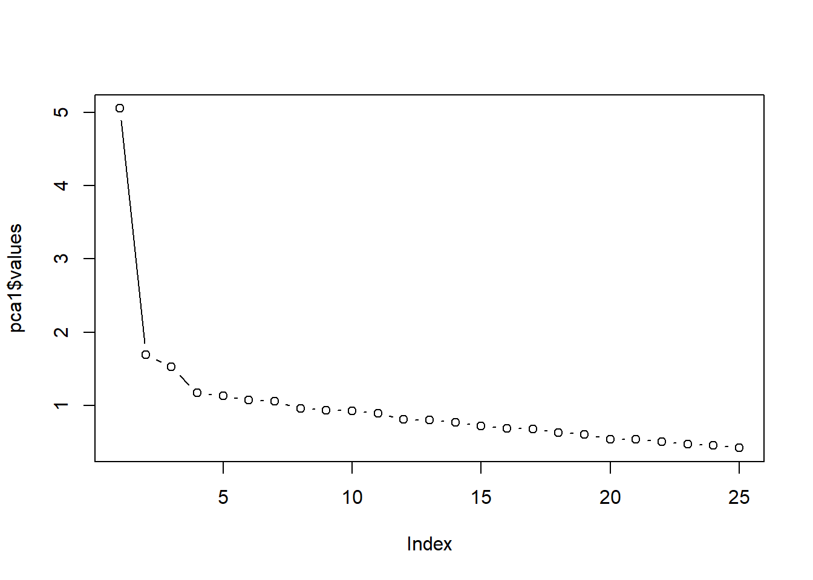
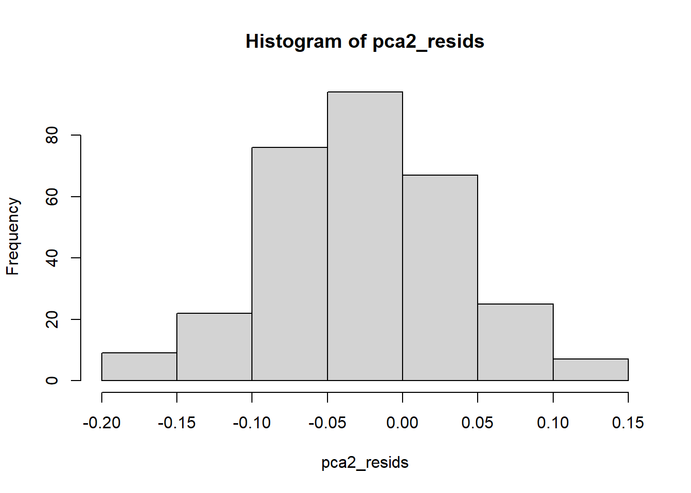
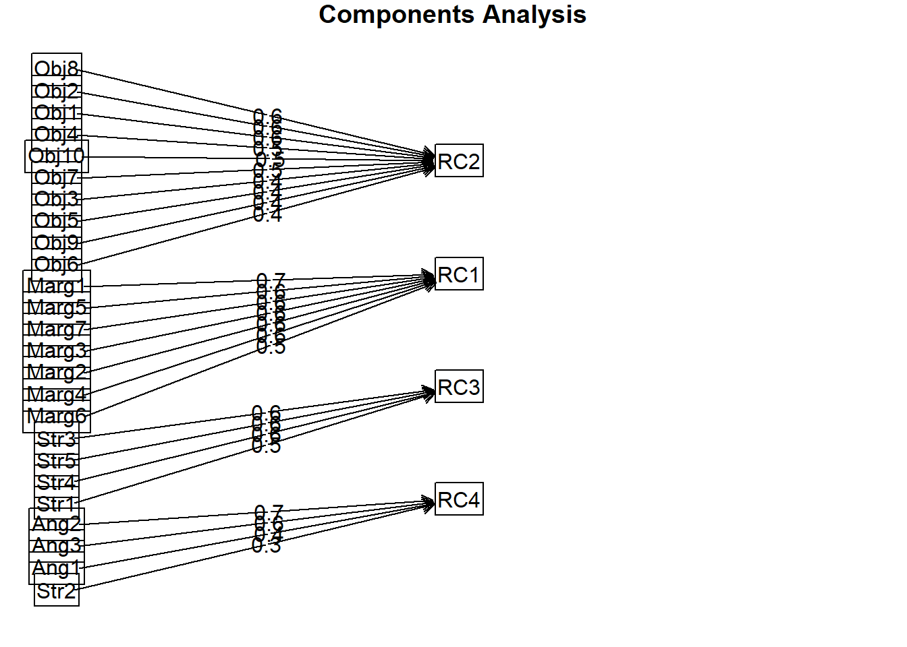
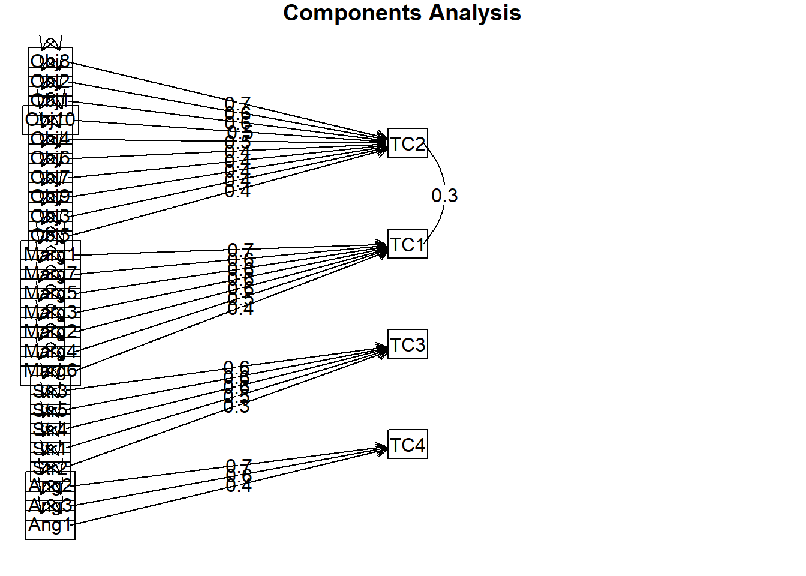
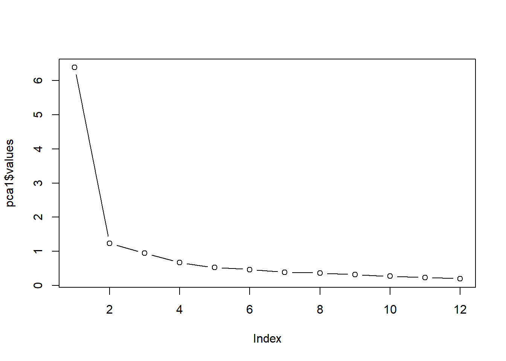
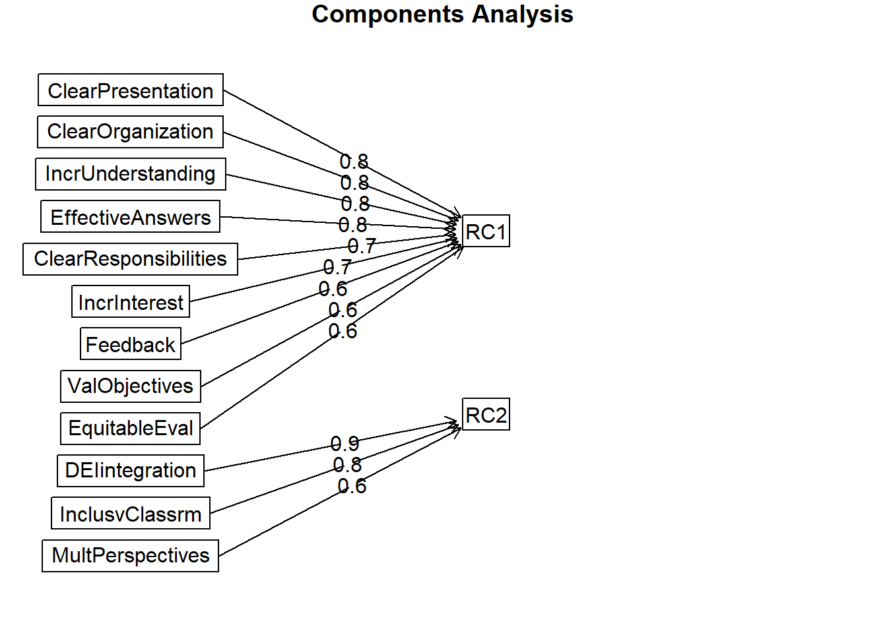
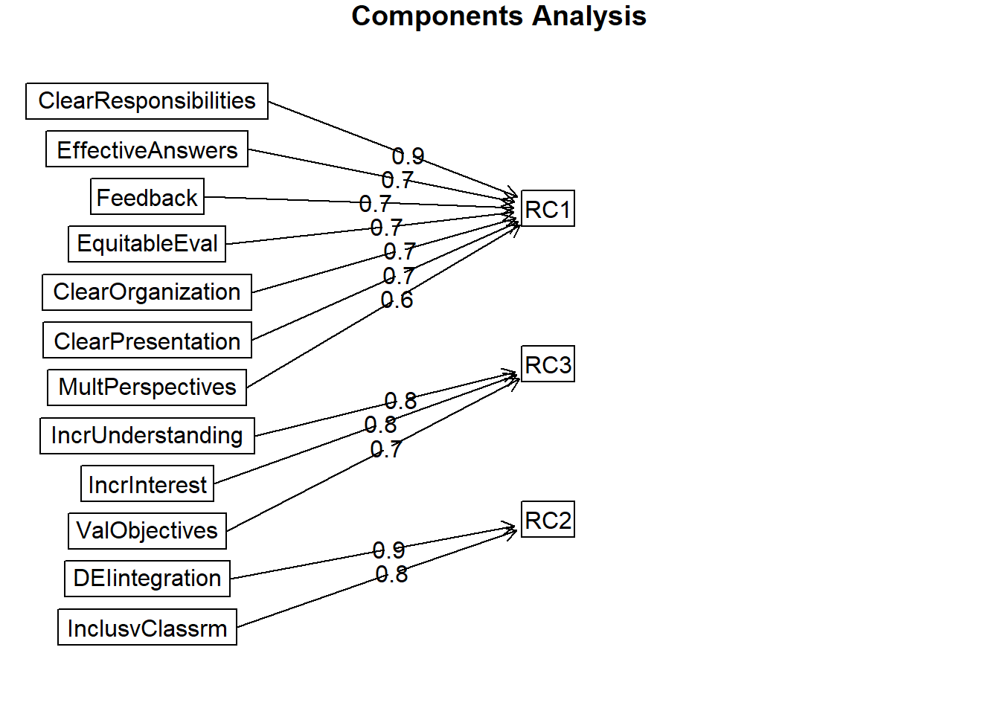
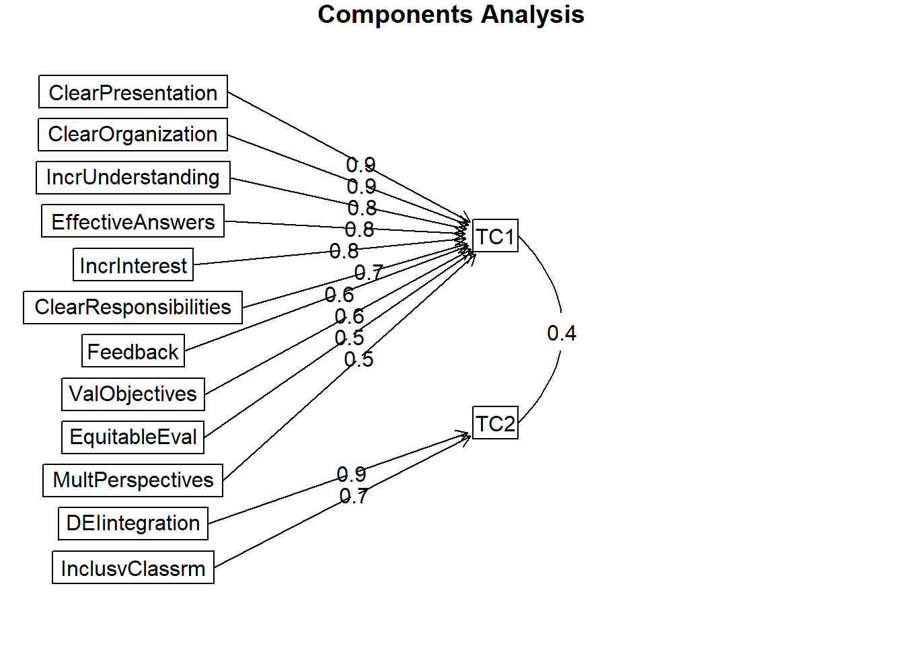
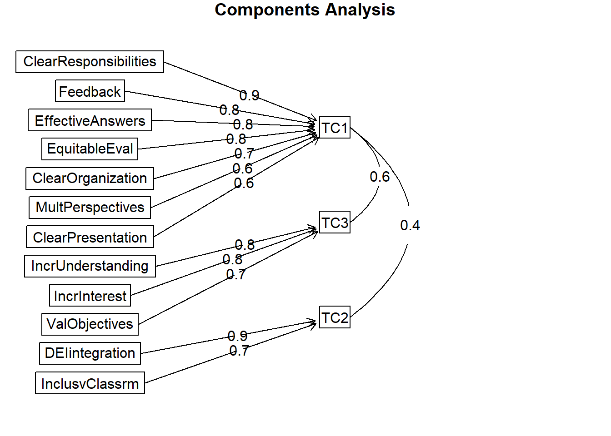

Chapter 8 Principal Components Analysis
In this lesson on principal components analysis (PCA) I provide an introduction to the exploratory factor analysis (EFA) arena. We will review the theoretical and technical aspects of PCA, we will work through a research vignette, and then consider the relationship of PCA to item analysis and reliability coefficients.
Please note, although PCA is frequently grouped into EFA techniques, it is exploratory but it is not factor analysis. We’ll discuss the difference in the lecture.
8.2 Exploratory Principal Components Analysis
The psychometric version of parsimony is seen in our attempt to describe (components) or to explain (factors) in the relationships between many observed variables in terms of a more limited set of components, latent factors, or dimensions.
That is, we are trying to:
- understand the structure of a set of variables,
- construct a questionnaire to measure an underlying latent variable, and
- reduce a data set to a more manageable size (e.g., representing bundles of items as subscale scores) while retaining as much of the information as possible
8.2.1 Some Framing Ideas (in very lay terms)
Exploratory versus confirmatory factor analysis.
Both exploratory and confirmatory approaches to components/factor analysis are used in scale construction. Think of “scales” as being interchangeable with “factors” and “components.”
- That said, “factors” and “components” are not interchangeable terms.
Exploratory: Even though we may have an a priori model in mind, we explore the structure of the items by using diagnostics (KMO, Barlett’s, determinant), factor extraction, and rotation to determine the number of scales (i.e., components or factors) that exist within the raw data or correlation matrix. The algorithms (including matrix algebra) determine the relationship of each item to its respective scales (i.e., components or factors).
Confirmatory: Starting with an a priori theory, we specify the structure (i.e., number and levels of factors) and which items belong to factors. We use structural equation modeling as the framework. We evaluate the quality of the model with a number of fit indices.
Within the exploratory category we will focus on two further distinctions (there are even more). The first is principal components analysis (PCA). The second is principal axis factoring (PAF). PAF is one of the approaches that is commonly termed “exploratory factor analysis” (EFA). In this first lesson we focus on the differences between PCA and EFA.
Option #1/Component model: PCA approximates the correlation matrix in terms of the product of components where each is a weighted linear sum of the variables. In the figure below, note how the arrows in the components analysis (a path model) point from variables to the component. Perhaps an oversimplification, think of each of these as a predictor variable contributing to an outcome.
Option #2/Factor model: EFA (and in the next lesson, PAF/principal axis factoring) approximates the correlation matrix by the product of the two factors; this approach presumes that the factors are the causes (rather than as consequences). In the figure below, note how the arrows in the factor analysis model (a structural model) point from latent variable (or factor) to the observed variables (items). Factor analysis has been termed causal modeling because the latent variables are theorized to cause the responses to the individual items. There are other popular approaches, including parallel analysis (which is what the authors used in this lesson’s research vignette).
Well-crafted figures provide important clues to the analyses. In structural models, rectangles and squares indicate the presence of observed (also called manifest) variables. These are variables that have a column in the dataset. In our particular case, they are the responses to the 25 items in the GRMS.
Circles or ovals represent latent variables or factors. These were never raw data, but are composed of the relations of variables that were collected. They are more complex than mean or sum scores. Rather, they represent what the variables that represent them share in common.

Our focus today is on the principal component analysis (PCA) approach to scale construction.
8.3 PCA Workflow
Below is a screenshot of the workflow. The original document is located in the Github site that hosts the ReCentering Psych Stats: Psychometrics OER.

Steps in the process include:
- Creating an items only dataframe where any items are scaled in the same direction (e.g., negatively worded items are reverse-scored).
- Conducting tests that assess the statistical assumptions of PCA to ensure that the data is appropriate for PCA.
- Determining the number of components (think “subscales”) to extract.
- Conducting the component extraction – this process will likely occur iteratively,
- exploring orthogonal (uncorrelated/independent) and oblique (correlated)components, and
- changing the number of components to extract
Because the intended audience for the ReCentering Psych Stats OER is the scientist-practitioner-advocate, this lesson focuses on the workflow and decisions. As you might guess, the details of PCA can be quite complex. Some important notions to consider that may not be obvious from lesson, are these:
- The values of component loadings are directly related to the correlation (similarly, the covariance) matrix between the items.
- Although I do not explain this in detail, nearly every analytic step attempts to convey this notion by presenting equivalent analytic options using the raw data and correlation matrix.
- PCA is about dimension reduction – our goal is fewer components (i.e., subscales) than there are items.
- In this lesson’s vignette there are 25 items on the scale and we will end up with 4 subscales.
- Principal component analysis is exploratory, but it is not “factor analysis.”
- Matrix algebra (e.g., using the transpose of a matrix, multiplying matrices together) plays a critical role in the analytic solution.
8.4 Research Vignette
This lesson’s research vignette emerges from Lewis and Neville’s Gendered Racial Microaggressions Scale for Black Women (2015). The article reports on two separate studies that comprised the development, refinement, and psychometric evaluation of two parallel versions (stress appraisal, frequency) of the scale. Below, I simulate data from the final construction of the stress appraisal version as the basis of the lecture. Items were on a 6-point Likert scale ranging from 0 (not at all stressful) to 5 (extremely stressful).
Lewis and Neville (2015) reported support for a total scale score (25 items) and four subscales. Below, I list the four subscales, their number of items, and a single example item. At the outset, let me provide a content advisory. For those who hold this particular identity (or related identities) the content in the items may be upsetting. In other lessons, I often provide a variable name that gives an indication of the primary content of the item. In the case of the GRMS, I will simply provide an abbreviation of the subscale name and its respective item number. This will allow us to easily inspect the alignment of the item with its intended factor, and hopefully minimize discomfort. If you are not a member of this particular identity, I encourage you to learn about these microaggressions by reading the article in its entirety. Please do not ask members of this group to explain why these microaggressions are harmful or ask if they have encountered them. The four factors, number of items, and sample item are as follows:
- Assumptions of Beauty and Sexual Objectification
- 10 items
- “Objectified me based on physical features.”
- Abbreviated in the simulated data as “Obj#”
- Silenced and Marginalized
- 7 items
- “Someone has tried to ‘put me in my place.’”
- Abbreviated in the simulated data as “Marg#”
- Strong Black Woman Stereotype
- 5 items
- “I have been told that I am too assertive.”
- Abbreviated in the simulated data as “Str#”
- Angry Black Woman Stereotype
- 3 items
- “Someone accused me of being angry when speaking calm.”
- Abbreviated in the simulated data as “Ang#”
Three additional scales were reported in the Lewis and Neville article (2015). Because (a) the focus of this lesson is on exploratory factor analytic approaches and, therefore, only requires item-level data for the scale, and (b) the article does not include correlations between the subscales/scales of all involved measures, I only simulated item-level data for the GRMS items.
Below, I walk through the data simulation. This is not an essential portion of the lesson, but I will lecture it in case you are interested. None of the items are negatively worded (relative to the other items), so there is no need to reverse-score any items.
Simulating the data involved using factor loadings, means, standard deviations, and correlations between the scales. Because the simulation will produce “out-of-bounds” values, the code below rescales the scores into the range of the Likert-type scaling and rounds them to whole values.
# Entering the intercorrelations, means, and standard deviations from
# the journal article
LewisGRMS_generating_model <- "
#measurement model
Objectification =~ .69*Obj1 + .69*Obj2 + .60*Obj3 + .59*Obj4 + .55*Obj5 + .55*Obj6 + .54*Obj7 + .50*Obj8 + .41*Obj9 + .41*Obj10
Marginalized =~ .93*Marg1 + .81*Marg2 +.69*Marg3 + .67*Marg4 + .61*Marg5 + .58*Marg6 +.54*Marg7
Strong =~ .59*Str1 + .55*Str2 + .54*Str3 + .54*Str4 + .51*Str5
Angry =~ .70*Ang1 + .69*Ang2 + .68*Ang3
#Means
Objectification ~ 1.85*1
Marginalized ~ 2.67*1
Strong ~ 1.61*1
Angry ~ 2.29*1
#Correlations
Objectification ~~ .63*Marginalized
Objectification ~~ .66*Strong
Objectification ~~ .51*Angry
Marginalized ~~ .59*Strong
Marginalized ~~ .62*Angry
Strong ~~ .61*Angry
"
set.seed(240311)
dfGRMS <- lavaan::simulateData(model = LewisGRMS_generating_model, model.type = "sem",
meanstructure = T, sample.nobs = 259, standardized = FALSE)
# used to retrieve column indices used in the rescaling script below
col_index <- as.data.frame(colnames(dfGRMS))
# The code below loops through each column of the dataframe and
# assigns the scaling accordingly Rows 1 thru 26 are the GRMS items
for (i in 1:ncol(dfGRMS)) {
if (i >= 1 & i <= 26) {
dfGRMS[, i] <- scales::rescale(dfGRMS[, i], c(1, 5))
}
}
# rounding to integers so that the data resembles that which was
# collected
library(tidyverse)
dfGRMS <- dfGRMS %>%
round(0)
# quick check of my work psych::describe(dfGRMS)The optional script below will let you save the simulated data to your computing environment as either a .csv file (think “Excel lite”) or .rds object (preserves any formatting you might do). If you save the .csv file and bring it back in, you will lose any formatting (e.g., ordered factors will be interpreted as character variables).
#write the simulated data as a .csv
#write.table(dfGRMS, file="dfGRMS.csv", sep=",", col.names=TRUE, row.names=FALSE)
#bring back the simulated dat from a .csv file
#dfGRMS <- read.csv ("dfGRMS.csv", header = TRUE)An .rds file preserves all formatting to variables prior to the export and re-import. For the purpose of this chapter, you don’t need to do either. That is, you can re-simulate the data each time you work the problem.
8.5 Working the Vignette
Below we will create a correlation matrix of our items. Whether we are conducting PCA or PAF, the dimension-reduction we are seeking is looking for clusters of correlated items in the \(R\)-matrix. Essentially, these are (Field, 2012):
- statistical entities that can be plotted as classification axes where coordinates of variables along each axis represent the strength of the relationship between that variable to each component/factor.
- mathematical equations, resembling regression equations, where each variable is represented according to its relative weight
PCA in particular establishes which linear components exist within the data and how a particular variable might contribute to that component.
Here is the correlation matrix of our items. It would be quite a daunting exercise to visually inspect this and manually cluster the correlations of items.
Next, we create an object that holds the correlation matrix of the items.
Obj1 Obj2 Obj3 Obj4 Obj5 Obj6 Obj7 Obj8 Obj9 Obj10 Marg1 Marg2 Marg3
Obj1 1.00 0.30 0.24 0.20 0.27 0.18 0.25 0.32 0.12 0.26 0.17 0.21 0.19
Obj2 0.30 1.00 0.32 0.24 0.27 0.21 0.24 0.29 0.26 0.19 0.08 0.19 0.14
Obj3 0.24 0.32 1.00 0.21 0.22 0.19 0.25 0.21 0.17 0.23 0.25 0.19 0.15
Obj4 0.20 0.24 0.21 1.00 0.36 0.19 0.27 0.27 0.23 0.26 0.16 0.13 0.17
Obj5 0.27 0.27 0.22 0.36 1.00 0.16 0.16 0.25 0.14 0.19 0.26 0.23 0.22
Obj6 0.18 0.21 0.19 0.19 0.16 1.00 0.16 0.19 0.14 0.10 0.16 0.06 0.05
Obj7 0.25 0.24 0.25 0.27 0.16 0.16 1.00 0.33 0.21 0.25 0.31 0.18 0.20
Obj8 0.32 0.29 0.21 0.27 0.25 0.19 0.33 1.00 0.16 0.26 0.12 0.10 0.12
Obj9 0.12 0.26 0.17 0.23 0.14 0.14 0.21 0.16 1.00 0.14 0.03 0.08 0.18
Obj10 0.26 0.19 0.23 0.26 0.19 0.10 0.25 0.26 0.14 1.00 0.10 0.10 0.20
Marg1 0.17 0.08 0.25 0.16 0.26 0.16 0.31 0.12 0.03 0.10 1.00 0.33 0.36
Marg2 0.21 0.19 0.19 0.13 0.23 0.06 0.18 0.10 0.08 0.10 0.33 1.00 0.35
Marg3 0.19 0.14 0.15 0.17 0.22 0.05 0.20 0.12 0.18 0.20 0.36 0.35 1.00
Marg4 0.21 0.15 0.20 0.24 0.21 0.13 0.21 0.17 0.07 0.17 0.41 0.20 0.37
Marg5 0.09 0.17 0.13 0.20 0.25 0.12 0.18 0.18 0.20 0.06 0.35 0.31 0.24
Marg6 0.22 0.21 0.11 0.22 0.24 0.22 0.31 0.20 0.12 0.14 0.34 0.28 0.31
Marg7 0.08 0.18 0.11 0.19 0.18 0.12 0.13 0.13 0.09 0.07 0.28 0.29 0.23
Str1 0.19 0.19 0.19 0.13 0.23 0.06 0.26 0.14 0.13 0.21 0.17 0.18 0.15
Str2 0.23 0.15 0.18 0.14 0.11 0.14 0.18 0.10 0.07 0.16 0.11 0.15 0.21
Str3 0.18 0.06 0.15 0.10 0.13 0.06 0.15 0.05 0.05 0.17 0.14 0.18 0.15
Str4 0.03 0.14 0.17 0.13 0.07 0.08 0.12 0.03 0.00 0.06 0.10 0.07 0.06
Str5 0.13 0.11 0.17 0.01 0.09 0.05 0.15 0.06 0.02 0.03 0.07 0.15 0.05
Ang1 0.06 0.01 0.15 0.14 0.11 0.04 0.25 0.08 0.12 0.06 0.21 0.19 0.13
Ang2 0.05 0.05 0.09 0.07 0.09 0.14 0.09 0.03 -0.01 0.13 0.13 0.21 0.14
Ang3 0.21 0.10 0.18 0.19 0.11 0.11 0.23 0.08 0.08 0.14 0.25 0.20 0.14
Marg4 Marg5 Marg6 Marg7 Str1 Str2 Str3 Str4 Str5 Ang1 Ang2 Ang3
Obj1 0.21 0.09 0.22 0.08 0.19 0.23 0.18 0.03 0.13 0.06 0.05 0.21
Obj2 0.15 0.17 0.21 0.18 0.19 0.15 0.06 0.14 0.11 0.01 0.05 0.10
Obj3 0.20 0.13 0.11 0.11 0.19 0.18 0.15 0.17 0.17 0.15 0.09 0.18
Obj4 0.24 0.20 0.22 0.19 0.13 0.14 0.10 0.13 0.01 0.14 0.07 0.19
Obj5 0.21 0.25 0.24 0.18 0.23 0.11 0.13 0.07 0.09 0.11 0.09 0.11
Obj6 0.13 0.12 0.22 0.12 0.06 0.14 0.06 0.08 0.05 0.04 0.14 0.11
Obj7 0.21 0.18 0.31 0.13 0.26 0.18 0.15 0.12 0.15 0.25 0.09 0.23
Obj8 0.17 0.18 0.20 0.13 0.14 0.10 0.05 0.03 0.06 0.08 0.03 0.08
Obj9 0.07 0.20 0.12 0.09 0.13 0.07 0.05 0.00 0.02 0.12 -0.01 0.08
Obj10 0.17 0.06 0.14 0.07 0.21 0.16 0.17 0.06 0.03 0.06 0.13 0.14
Marg1 0.41 0.35 0.34 0.28 0.17 0.11 0.14 0.10 0.07 0.21 0.13 0.25
Marg2 0.20 0.31 0.28 0.29 0.18 0.15 0.18 0.07 0.15 0.19 0.21 0.20
Marg3 0.37 0.24 0.31 0.23 0.15 0.21 0.15 0.06 0.05 0.13 0.14 0.14
Marg4 1.00 0.27 0.28 0.24 0.13 0.17 0.13 0.16 -0.01 0.11 0.17 0.20
Marg5 0.27 1.00 0.27 0.23 0.13 0.06 0.20 0.11 0.08 0.04 0.10 0.22
Marg6 0.28 0.27 1.00 0.26 0.12 0.28 0.17 0.14 0.09 0.13 0.21 0.16
Marg7 0.24 0.23 0.26 1.00 0.12 -0.01 0.05 0.05 0.03 0.18 0.12 0.08
Str1 0.13 0.13 0.12 0.12 1.00 0.16 0.22 0.14 0.18 0.18 0.05 0.06
Str2 0.17 0.06 0.28 -0.01 0.16 1.00 0.19 0.17 0.18 0.11 0.16 0.12
Str3 0.13 0.20 0.17 0.05 0.22 0.19 1.00 0.27 0.19 0.27 0.13 0.22
Str4 0.16 0.11 0.14 0.05 0.14 0.17 0.27 1.00 0.11 0.12 0.04 0.04
Str5 -0.01 0.08 0.09 0.03 0.18 0.18 0.19 0.11 1.00 0.15 0.11 0.12
Ang1 0.11 0.04 0.13 0.18 0.18 0.11 0.27 0.12 0.15 1.00 0.23 0.26
Ang2 0.17 0.10 0.21 0.12 0.05 0.16 0.13 0.04 0.11 0.23 1.00 0.27
Ang3 0.20 0.22 0.16 0.08 0.06 0.12 0.22 0.04 0.12 0.26 0.27 1.00This correlation matrix is so big that you might wish to write code so that you can examine it in sections
With component and factor analytic procedures we can analyze the data with either raw data or correlation matrix. Producing the matrix helps us see how this is a “structural” analysis. That is, we are trying to see if our more parsimonious extraction (i.e., our “dimension reduction”) “reproduces” this original correlation matrix. In each of the analyses I will include code for running the anlayses with raw data and the r-matrix.
8.5.1 Three Diagnostic Tests to Evaluate the Appropriateness of the Data for Component-or-Factor Analysis
Below is a snip from the workflow to remind us where we are in the steps to PCA.

8.5.1.1 Is my sample adequate for PCA?
There have been a number of generic guidelines (some supported by analyses, some not) about “how big” the sample size should be:
- 10-15 participants per variable
- 10 times as many participants as variables (Nunnally, 1978)
- 5 and 10 participants per variable up to 300 (Kass & Tinsley, 1979)
- 300 (Tabachnick & Fidell, 2007)
- 1000 = excellent, 300 = good, 100 = poor (Comrey & Lee, 1992)
Of course it is more complicated. Monte Carlo studies have shown that:
- if factor loadings are large (~.6), the solution is reliable regardless of size
- if communalities are large (~.6), relatively small samples (~100) are sufficient, but when they are lower (well below .5), then larger samples (>500 are indicated).
The Kaiser-Meyer-Olkin index (KMO) is an index of sampling adequacy that can be used with the actual sample to let us know if the sample size is sufficient relative to the statistical characteristics of the data. If it is below the threshold, we should probably collect more data to see if it can achieve a satisfactory value.
Kaiser’s 1974 recommendations were:
- bare minimum of .5
- values between .5 and .7 as mediocre
- values between .7 and .8 as good
- values above .9 are superb
Revelle has included a KMO test in the psych package. The function can use either raw or matrix data. Either way, the only variables in the matrix should be the items of interest. This means that everything else (e.g., total or subscale scores, ID numbers) should be removed.
Kaiser-Meyer-Olkin factor adequacy
Call: psych::KMO(r = items)
Overall MSA = 0.84
MSA for each item =
Obj1 Obj2 Obj3 Obj4 Obj5 Obj6 Obj7 Obj8 Obj9 Obj10 Marg1 Marg2 Marg3
0.85 0.85 0.88 0.86 0.87 0.86 0.87 0.85 0.76 0.85 0.83 0.87 0.87
Marg4 Marg5 Marg6 Marg7 Str1 Str2 Str3 Str4 Str5 Ang1 Ang2 Ang3
0.87 0.82 0.88 0.84 0.87 0.84 0.79 0.74 0.81 0.74 0.75 0.82 We examine the KMO values for both the overall matrix and the individual items.
At the matrix level, our \(KMO = .84\), which falls into Kaiser’s definition of good. You can locate this value as the “Overall MSA.”
At the item level, the KMO should be > .50. Variables with values below .50 should be evaluated for exclusion from the analysis (or run the analysis with and without the variable and compare the difference). Because removing and adding variables impacts the KMO, be sure to re-evaluate the sampling adequacy if changes are made to the items (and/or sample size).
At the item level, our KMO values range between .74 and .87.
Considering both item and matrix levels, we conclude that the sample size and the data are adequate for component (or factor) analysis.
8.5.1.2 Are there correlations among the variables that are large enough to be analyzed?
Bartlett’s test lets us know if a matrix is an identity matrix. In an identity matrix all correlation coefficients (everything on the off-diagonal) would be 0.0 (and everything on the diagonal would be 1.0.
A signifcant Barlett’s (i.e., \(p < .05\)) tells that the \(R\)-matrix is not an identity matrix. That is, there are some relationships between variables that can be analyzed.
The cortest.bartlett() function is in the psych package and can be run either from the raw data or R matrix formats.
R was not square, finding R from data$chisq
[1] 1113.299
$p.value
[1] 0.0000000000000000000000000000000000000000000000000000000000000000000000000000000000000000000007869186
$df
[1] 300# raw data produces the warning 'R was not square, finding R from
# data.' This means nothing other than we fed it raw data and the
# function is creating a matrix from which to do the analysis.
# psych::cortest.bartlett(GRMSmatrix, n = 259) #if using the matrix,
# must specify sampleOur Bartlett’s test is significant: \(\chi ^{1}(300)=1113.299, p < .001\). This means that our sample correlation matrix is statistically significantly different than an identity matrix and, therefore, supports a component-or-factor analytic approach for investigating the data.
8.5.1.3 Is there multicollinearity or singularity in my data?
The determinant of the correlation matrix should be greater than 0.00001 (that would be 4 zeros, then the 1). If it is smaller than 0.00001 then we may have an issue with multicollinearity (i.e., variables that are too highly correlated) or singularity (variables that are perfectly correlated).
The determinant function we use comes from base R. It is easiest to compute when the correlation matrix is the object. However, it is also possible to specify the command to work with the raw data.
[1] 0.01140074With a value of 0.01140, our determinant is greater than the 0.00001 requirement. If it were not, then we could identify problematic variables (i.e., those correlating too highly with others; those not correlating sufficiently with others) and re-run the diagnostic statitics.
Summary: Data screening were conducted to determine the suitability of the data for this analyses. The Kaiser-Meyer-Olkin measure of sampling adequacy (KMO; Kaiser, 1970) represents the ratio of the squared correlation between variables to the squared partial correlation between variables. KMO ranges from 0.00 to 1.00; values closer to 1.00 indicate that the patterns of correlations are relatively compact and that component analysis should yield distinct and reliable components (Field, 2012). In our dataset, the KMO value was .84, indicating acceptable sampling adequacy. The Barlett’s Test of Sphericity examines whether the population correlation matrix resembles an identity matrix (Field, 2012). When the p value for the Bartlett’s test is < .05, we are fairly certain we have clusters of correlated variables. In our dataset, \(\chi ^{1}(300)=1113.299, p < .001\), indicating the correlations between items are sufficiently large enough for principal components analysis. The determinant of the correlation matrix alerts us to any issues of multicollinearity or singularity and should be larger than 0.00001. Our determinant was 0.01140, supporting the suitability of our data for analysis.
8.5.2 Principal Components Analysis
Below is a snip from the workflow to remind us where we are in the steps to PCA.

We can use the principal() function from the psych package with raw or matrix data.
We start by creating a principal components model that has the same number of components as there are variables in the data. This allows us to inspect the component’s eigenvalues and make decisions about which to extract.
- Note, this is different than actual factor analysis where you must extract fewer factors than variables (e.g., extracting 18 [an arbitray number] instead of 25).
# All of the code sets below are functionally identical. They simply
# swap out using the df or r-matrix, and whether I specify the number
# of factors or write code to instruct R to calculate it.
# pca1 <- psych::principal(GRMSmatrix, nfactors=25, rotate = 'none')
# #using the matrix form of the data and specifying the # factors
# pca1 <- psych::principal(GRMSmatrix,
# nfactors=length(GRMSmatrix[,1]), rotate = 'none') #using the matrix
# form of the data and letting the length function automatically
# calculate the # factors as a function of how many columns in the
# matrix
# pca1 <- psych::principal(items, nfactors=25, rotate='none') #using
# raw data and specifying # factors
pca1 <- psych::principal(items, nfactors = length(items), rotate = "none") # using raw data and letting the length function automatically calculate the # factors as a function of how many columns in the raw data
pca1Principal Components Analysis
Call: psych::principal(r = items, nfactors = length(items), rotate = "none")
Standardized loadings (pattern matrix) based upon correlation matrix
PC1 PC2 PC3 PC4 PC5 PC6 PC7 PC8 PC9 PC10 PC11 PC12
Obj1 0.50 -0.31 0.09 -0.14 -0.18 -0.29 0.19 -0.20 -0.11 -0.02 -0.08 0.11
Obj2 0.48 -0.44 -0.04 0.14 -0.02 0.17 0.25 0.05 -0.05 0.09 0.23 0.26
Obj3 0.49 -0.21 0.18 0.06 0.02 0.08 0.03 -0.28 -0.02 -0.04 0.58 -0.07
Obj4 0.50 -0.28 -0.14 -0.09 0.14 0.14 -0.31 0.05 -0.05 0.26 -0.17 -0.10
Obj5 0.52 -0.17 -0.17 0.15 0.03 -0.06 0.07 -0.12 -0.05 0.42 -0.20 -0.38
Obj6 0.35 -0.21 -0.06 -0.28 -0.13 0.54 0.15 -0.04 0.10 -0.04 0.00 -0.31
Obj7 0.57 -0.15 0.10 -0.07 0.17 -0.07 -0.12 -0.04 0.22 -0.47 -0.15 0.08
Obj8 0.45 -0.45 -0.11 -0.12 0.06 -0.06 0.01 -0.18 0.16 -0.10 -0.27 0.26
Obj9 0.32 -0.32 -0.10 0.11 0.38 0.12 -0.03 0.55 -0.27 -0.24 0.17 -0.09
Obj10 0.42 -0.31 0.12 -0.22 -0.05 -0.37 -0.27 0.08 0.02 0.23 0.10 0.12
Marg1 0.56 0.37 -0.25 0.05 -0.04 -0.05 -0.07 -0.31 0.08 -0.26 0.07 -0.22
Marg2 0.52 0.33 -0.11 0.15 0.03 -0.18 0.35 0.07 -0.05 0.13 0.08 0.18
Marg3 0.52 0.24 -0.24 0.07 -0.19 -0.32 -0.06 0.29 -0.06 -0.09 0.18 -0.04
Marg4 0.53 0.20 -0.26 -0.06 -0.26 -0.03 -0.30 -0.13 0.01 -0.05 0.19 -0.06
Marg5 0.49 0.20 -0.29 0.24 0.08 0.18 0.05 -0.06 -0.44 -0.06 -0.22 0.03
Marg6 0.57 0.15 -0.15 -0.10 -0.27 0.13 0.09 0.23 0.13 -0.14 -0.31 0.09
Marg7 0.41 0.21 -0.38 0.15 0.19 0.13 0.10 0.05 0.39 0.20 0.06 0.28
Str1 0.42 -0.09 0.27 0.38 0.12 -0.26 -0.02 0.04 0.24 0.08 -0.06 -0.31
Str2 0.39 -0.01 0.35 -0.13 -0.49 -0.02 0.06 0.34 0.00 -0.12 -0.03 -0.13
Str3 0.39 0.22 0.47 0.18 -0.01 0.00 -0.20 0.00 -0.27 0.13 -0.21 0.12
Str4 0.27 0.07 0.34 0.37 -0.28 0.44 -0.38 -0.05 0.05 0.08 0.06 0.24
Str5 0.25 0.08 0.48 0.19 0.04 0.03 0.50 -0.10 0.04 -0.09 -0.07 -0.06
Ang1 0.37 0.31 0.33 -0.09 0.50 0.03 -0.16 0.09 0.29 -0.03 0.01 -0.04
Ang2 0.31 0.35 0.16 -0.52 0.03 0.11 0.16 0.18 0.08 0.34 0.09 0.01
Ang3 0.42 0.24 0.17 -0.41 0.28 0.01 -0.02 -0.23 -0.40 -0.05 0.03 0.08
PC13 PC14 PC15 PC16 PC17 PC18 PC19 PC20 PC21 PC22 PC23 PC24
Obj1 -0.06 -0.43 -0.01 0.17 0.09 -0.07 0.07 0.33 -0.02 0.00 0.13 -0.20
Obj2 -0.05 -0.03 -0.28 0.13 0.06 -0.12 -0.12 -0.36 -0.03 -0.19 -0.04 -0.14
Obj3 -0.05 0.06 0.08 -0.24 -0.19 0.07 -0.22 0.10 -0.12 0.22 -0.03 0.00
Obj4 -0.34 0.13 0.03 -0.14 0.21 0.14 0.18 0.03 -0.30 0.07 -0.06 -0.18
Obj5 -0.24 -0.01 -0.02 -0.03 -0.14 -0.22 -0.14 -0.04 0.18 -0.05 0.15 0.22
Obj6 0.37 -0.24 0.15 -0.07 0.05 0.00 0.24 -0.11 0.00 -0.04 -0.02 0.04
Obj7 0.02 0.18 -0.19 -0.14 0.07 -0.14 0.04 -0.05 -0.18 -0.09 0.32 0.15
Obj8 0.02 0.12 0.18 0.18 -0.42 0.14 0.09 -0.07 0.08 0.16 -0.12 0.08
Obj9 0.03 -0.05 0.09 0.12 -0.02 -0.08 -0.03 0.26 0.07 -0.02 -0.02 0.12
Obj10 0.33 0.21 0.18 -0.23 0.16 -0.03 -0.04 0.02 0.23 -0.21 -0.08 -0.03
Marg1 0.03 0.00 -0.01 -0.12 -0.01 -0.06 -0.06 0.04 0.11 -0.13 0.01 -0.17
Marg2 -0.02 -0.07 -0.13 -0.29 -0.15 0.06 0.36 0.09 -0.12 -0.16 -0.16 0.19
Marg3 -0.05 -0.02 0.21 0.05 -0.02 -0.19 0.23 -0.29 0.04 0.29 0.11 -0.11
Marg4 -0.04 0.06 0.07 0.45 0.07 0.05 -0.04 0.04 -0.18 -0.21 -0.16 0.20
Marg5 0.21 0.23 -0.01 0.02 -0.12 0.22 -0.05 0.04 0.07 -0.07 0.10 -0.23
Marg6 -0.03 -0.02 -0.10 -0.17 0.07 -0.23 -0.30 0.10 0.00 0.15 -0.32 -0.02
Marg7 0.04 -0.15 0.16 0.02 0.27 0.25 -0.16 0.05 0.08 0.10 0.20 0.09
Str1 0.34 0.01 -0.35 0.18 0.09 0.15 0.05 0.01 -0.02 0.19 -0.12 -0.03
Str2 -0.23 -0.01 -0.06 -0.05 -0.06 0.45 -0.08 -0.06 0.12 -0.08 0.12 0.04
Str3 0.22 -0.28 0.23 -0.04 -0.07 -0.04 -0.19 -0.15 -0.28 0.00 0.05 0.09
Str4 -0.07 0.05 -0.10 0.03 -0.02 -0.16 0.23 0.16 0.23 0.06 0.05 0.02
Str5 -0.14 0.34 0.38 0.13 0.26 -0.08 0.06 0.02 0.01 -0.04 -0.07 -0.01
Ang1 -0.21 -0.24 0.08 0.05 -0.21 0.01 0.00 -0.08 0.12 -0.18 -0.12 -0.19
Ang2 0.15 0.27 -0.13 0.19 -0.19 -0.13 -0.03 0.14 -0.12 0.06 0.17 -0.08
Ang3 -0.08 -0.05 -0.21 0.04 0.26 0.07 0.04 -0.12 0.23 0.19 -0.08 0.17
PC25 h2 u2 com
Obj1 -0.06 1 -0.00000000000000067 7.7
Obj2 0.09 1 0.00000000000000289 7.8
Obj3 -0.13 1 -0.00000000000000089 5.3
Obj4 0.09 1 -0.00000000000000089 8.8
Obj5 -0.06 1 -0.00000000000000222 7.1
Obj6 -0.07 1 0.00000000000000100 6.8
Obj7 -0.12 1 -0.00000000000000067 5.9
Obj8 0.14 1 -0.00000000000000022 7.9
Obj9 0.15 1 -0.00000000000000089 6.7
Obj10 -0.04 1 0.00000000000000100 10.9
Marg1 0.41 1 -0.00000000000000022 5.9
Marg2 0.01 1 -0.00000000000000044 7.8
Marg3 -0.07 1 -0.00000000000000022 8.2
Marg4 -0.11 1 -0.00000000000000022 6.7
Marg5 -0.23 1 0.00000000000000178 8.2
Marg6 -0.09 1 -0.00000000000000022 6.8
Marg7 0.02 1 0.00000000000000056 10.3
Str1 0.00 1 0.00000000000000078 9.5
Str2 0.05 1 -0.00000000000000111 6.5
Str3 0.14 1 0.00000000000000000 9.5
Str4 0.02 1 -0.00000000000000089 9.1
Str5 0.01 1 -0.00000000000000067 6.2
Ang1 -0.18 1 -0.00000000000000022 8.5
Ang2 0.10 1 0.00000000000000022 8.1
Ang3 0.02 1 0.00000000000000011 9.1
PC1 PC2 PC3 PC4 PC5 PC6 PC7 PC8 PC9 PC10 PC11
SS loadings 5.05 1.69 1.53 1.17 1.13 1.07 1.06 0.96 0.94 0.93 0.89
Proportion Var 0.20 0.07 0.06 0.05 0.05 0.04 0.04 0.04 0.04 0.04 0.04
Cumulative Var 0.20 0.27 0.33 0.38 0.42 0.47 0.51 0.55 0.58 0.62 0.66
Proportion Explained 0.20 0.07 0.06 0.05 0.05 0.04 0.04 0.04 0.04 0.04 0.04
Cumulative Proportion 0.20 0.27 0.33 0.38 0.42 0.47 0.51 0.55 0.58 0.62 0.66
PC12 PC13 PC14 PC15 PC16 PC17 PC18 PC19 PC20 PC21 PC22
SS loadings 0.81 0.80 0.77 0.72 0.69 0.68 0.63 0.60 0.54 0.53 0.50
Proportion Var 0.03 0.03 0.03 0.03 0.03 0.03 0.03 0.02 0.02 0.02 0.02
Cumulative Var 0.69 0.72 0.75 0.78 0.81 0.83 0.86 0.88 0.91 0.93 0.95
Proportion Explained 0.03 0.03 0.03 0.03 0.03 0.03 0.03 0.02 0.02 0.02 0.02
Cumulative Proportion 0.69 0.72 0.75 0.78 0.81 0.83 0.86 0.88 0.91 0.93 0.95
PC23 PC24 PC25
SS loadings 0.47 0.45 0.42
Proportion Var 0.02 0.02 0.02
Cumulative Var 0.97 0.98 1.00
Proportion Explained 0.02 0.02 0.02
Cumulative Proportion 0.97 0.98 1.00
Mean item complexity = 7.8
Test of the hypothesis that 25 components are sufficient.
The root mean square of the residuals (RMSR) is 0
with the empirical chi square 0 with prob < NA
Fit based upon off diagonal values = 1The total variance for a particular variable will have two components: some of it will be share with other variables (common variance, h2) and some of it will be specific to that measure (unique variance, u2). Random variance is also specific to one item, but not reliably so.
We can examine this most easily by examining the matrix (second screen).
The columns PC1 thru PC25 are the (uninteresting at this point) unrotated loadings. PC stands for “principal component.” Although these don’t align with the specific items, at this point in the procedure, there are as many components as variables.
Communalities are represented as \(h^2\). These are the proportions of common variance present in the variables. A variable that has no specific (or random) variance would have a communality of 1.0. If a variable shares none of its variance with any other variable its communality would be 0.0.
Because we extracted the same number components as variables, they all equal 1.0. That is we have explained all the variance in each variable. When we specify fewer components, the value of the communalities will decrease.
**Uniquenesses* are represented as \(u2\). These are the amount of unique variance for each variable. They are calculated as \(1 - h^2\) (or 1 minus the communality). Technically (at this point in the analysis where we have an equal number of components as items), they should all be zero, but the psych package is very “quantsy” and decimals are reported to the 15th and 16th decimal places! (hence the u2 for Q1 is -0.0000000000000006661338).
The final column, com, represents item complexity. This is an indication of how well an item reflects a single construct. If it is 1.0 then the item loads only on one component, if it is 2.0, it loads evenly on two components, and so forth. For now, we can ignore this. I mostly wanted to reassure you that “com” is not “communality”; h2 is communality.
Let’s switch to the first screen of output.
Eigenvalues are displayed in the row called SS loadings (i.e., the sum of squared loadings). They represent the variance explained by the particular linear component. PC1 explains 5.05 units of variance (out of a possible 25, the total of components). As a proportion, this is 5.05/25 = 0.20 (reported in the Proportion Var row).
[1] 0.202Note:
- Cumulative Var is helpful in determining how many components we would like to retain to balance parsimony (where the goal is frequently “as few as possible”) with the amount of variance we want to explain
- The eigenvalues are in descending order. If we were to use the eigenvalue > 1.0 (aka, “Kaiser’s”) criteria to determine how many components to extract, we would select 7. Joliffe’s critera was 0.7 (thus, we would select 13 components). Eigenvalues are only one criteria, let’s look at he scree plot.
Scree plot: We can gain another view of how many components to extract by creating a scree plot.
Eigenvalues are stored in the pca1 object’s variable, “values”. We can see all the values captured by this object with the names() function:
[1] "values" "rotation" "n.obs" "communality" "loadings"
[6] "fit" "fit.off" "fn" "Call" "uniquenesses"
[11] "complexity" "valid" "chi" "EPVAL" "R2"
[16] "objective" "residual" "rms" "factors" "dof"
[21] "null.dof" "null.model" "criteria" "STATISTIC" "PVAL"
[26] "weights" "r.scores" "Vaccounted" "Structure" "scores" Plotting the eigenvalues produces a scree plot. We can use this to further guage the number of factors we should extract.
plot(pca1$values, type = "b") #type = 'b' gives us 'both' lines and points; type = 'l' gives lines and is relatively worthless
We look for the point of inflexion. That is, where the baseline levels out into a plateau. It seems to me that there is only one clear component above the plateau. However, we see that components #5 and 5 flatten out, and then there is another drop. So it could be 1, 2, or 4.
8.5.3 Specifying the Number of Components
Below is a snip from the workflow to remind us where we are in the steps to PCA.

Having determined the number of components, we re-run the analysis with this specification. Especially when researchers may not have a clear theoretical structure that guides the process, researchers may do this iteratively with varying numbers of factors. Lewis and Neville (J. A. Lewis & Neville, 2015) examined solutions with 2, 3, 4, and 5 factors. Further, they used a parallel factor analysis, whereas we used a principal components analysis).
# pca2 <- psych::principal(GRMSmatrix, nfactors=4, rotate='none')
pca2 <- psych::principal(items, nfactors = 4, rotate = "none") #can copy prior script, but change nfactors and object name
pca2Principal Components Analysis
Call: psych::principal(r = items, nfactors = 4, rotate = "none")
Standardized loadings (pattern matrix) based upon correlation matrix
PC1 PC2 PC3 PC4 h2 u2 com
Obj1 0.50 -0.31 0.09 -0.14 0.37 0.63 1.9
Obj2 0.48 -0.44 -0.04 0.14 0.44 0.56 2.2
Obj3 0.49 -0.21 0.18 0.06 0.32 0.68 1.7
Obj4 0.50 -0.28 -0.14 -0.09 0.36 0.64 1.8
Obj5 0.52 -0.17 -0.17 0.15 0.35 0.65 1.6
Obj6 0.35 -0.21 -0.06 -0.28 0.25 0.75 2.7
Obj7 0.57 -0.15 0.10 -0.07 0.36 0.64 1.2
Obj8 0.45 -0.45 -0.11 -0.12 0.43 0.57 2.3
Obj9 0.32 -0.32 -0.10 0.11 0.23 0.77 2.4
Obj10 0.42 -0.31 0.12 -0.22 0.33 0.67 2.6
Marg1 0.56 0.37 -0.25 0.05 0.52 0.48 2.2
Marg2 0.52 0.33 -0.11 0.15 0.41 0.59 2.0
Marg3 0.52 0.24 -0.24 0.07 0.39 0.61 1.9
Marg4 0.53 0.20 -0.26 -0.06 0.40 0.60 1.8
Marg5 0.49 0.20 -0.29 0.24 0.42 0.58 2.6
Marg6 0.57 0.15 -0.15 -0.10 0.38 0.62 1.4
Marg7 0.41 0.21 -0.38 0.15 0.38 0.62 2.8
Str1 0.42 -0.09 0.27 0.38 0.40 0.60 2.8
Str2 0.39 -0.01 0.35 -0.13 0.29 0.71 2.2
Str3 0.39 0.22 0.47 0.18 0.46 0.54 2.7
Str4 0.27 0.07 0.34 0.37 0.33 0.67 2.9
Str5 0.25 0.08 0.48 0.19 0.34 0.66 2.0
Ang1 0.37 0.31 0.33 -0.09 0.35 0.65 3.1
Ang2 0.31 0.35 0.16 -0.52 0.51 0.49 2.7
Ang3 0.42 0.24 0.17 -0.41 0.43 0.57 2.9
PC1 PC2 PC3 PC4
SS loadings 5.05 1.69 1.53 1.17
Proportion Var 0.20 0.07 0.06 0.05
Cumulative Var 0.20 0.27 0.33 0.38
Proportion Explained 0.54 0.18 0.16 0.12
Cumulative Proportion 0.54 0.71 0.88 1.00
Mean item complexity = 2.3
Test of the hypothesis that 4 components are sufficient.
The root mean square of the residuals (RMSR) is 0.07
with the empirical chi square 695.44 with prob < 0.0000000000000000000000000000000000000000000000000000023
Fit based upon off diagonal values = 0.86Our eigenvalues/SS loadings remain the same. With 4 components, we explain 38% of the variance (we can see this in the “Cumulative Var” row.
Communality is the proportion of common variance within a variable. Principal components analysis assumes that all variance is common. Before extraction, all variance was set at 1.0, therefore, changing from 25 to 4 components will change this value (\(h2\)) as well as its associated uniqueness (\(u2\)), which is calculated as “1.0 minus the communality.”
The communalities (\(h2\)) and uniquenesses (\(u2\)) have changed.
Now we see that 37% of the variance associate with Obj1 is common/shared (the \(h2\) value).
Recall that we could represent this scale with all 25 items as components, but we want a more parsimonious explanation. By respecifying a smaller number of components, we lose some information. That is, the retained components (now 4) cannot explain all of the variance present in the data (as we saw, it explains about 38%, cumulatively). The amount of variance explained in each variable is represented by the communalities after extraction.
We can examine the communalities through the lens of Kaiser’s criterion (the eigenvalue > 1 criteria) to see if we think that “four” was a good number of components to extract.
Kaiser’s criterion is believed to be accurate if:
- when there are fewer than 30 variables (we had 25) and, after extraction, the communalities are greater than .70
- looking at our data, none are > .70, so, this does not support extracting four components
- when the sample size is greater than 250 (ours was 259) and the average communality is > .60
- we can extract the communalities from our object and calculate the mean the average communality
Using the names() function again, we see that “communality” is available. Thus, we can easily calculate their mean. To get this value let’s first examine the possible contents of the object we created from this PCA analysis by asking for its names.
[1] "values" "rotation" "n.obs" "communality" "loadings"
[6] "fit" "fit.off" "fn" "Call" "uniquenesses"
[11] "complexity" "valid" "chi" "EPVAL" "R2"
[16] "objective" "residual" "rms" "factors" "dof"
[21] "null.dof" "null.model" "criteria" "STATISTIC" "PVAL"
[26] "weights" "r.scores" "Vaccounted" "Structure" "scores" We see that it includes communalities. Thus, we can easily calculate their mean.
[1] 0.3774861We see that the average communality is 0.38. These two criteria would suggest that we may not have the best solution. That said (in our defense):
- We used the scree plot as a guide and there was support for four dimensions.
- We have an adequate sample size and that was supported with the KMO.
- Are the number of components consistent with theory? We have not yet inspected the component loadings. This will provide us with more information.
We could do several things:
- re-run with a different number of components (recall Lewis and Neville (2015) ran models with 2, 3, 4, and 5 factors)
- conduct more diagnostics
- reproduced correlation matrix
- the difference between the reproduced correlation matrix and the correlation matrix in the data
The factor.model() function in psych produces the reproduced correlation matrix by using the loadings from our extracted object. Conceptually, this matrix is the correlations that should be produced if we did not have the raw data but we only had the component loadings. We could do fancy matrix algebra and produce these.
The questions, though, is: How close did we get? How different is the reproduced correlation matrix from GRMSmatrix – the \(R\)-matrix produced from our raw data.
Obj1 Obj2 Obj3 Obj4 Obj5 Obj6 Obj7 Obj8 Obj9 Obj10 Marg1
Obj1 0.369 0.350 0.318 0.334 0.275 0.271 0.345 0.366 0.236 0.343 0.136
Obj2 0.350 0.442 0.329 0.356 0.352 0.222 0.320 0.398 0.317 0.300 0.125
Obj3 0.318 0.329 0.321 0.277 0.271 0.188 0.323 0.288 0.216 0.278 0.159
Obj4 0.334 0.356 0.277 0.356 0.320 0.265 0.317 0.374 0.257 0.298 0.212
Obj5 0.275 0.352 0.271 0.320 0.351 0.186 0.291 0.312 0.259 0.218 0.280
Obj6 0.271 0.222 0.188 0.265 0.186 0.249 0.242 0.289 0.155 0.264 0.120
Obj7 0.345 0.320 0.323 0.317 0.291 0.242 0.356 0.316 0.212 0.309 0.235
Obj8 0.366 0.398 0.288 0.374 0.312 0.289 0.316 0.425 0.288 0.336 0.111
Obj9 0.236 0.317 0.216 0.257 0.259 0.155 0.212 0.288 0.234 0.199 0.094
Obj10 0.343 0.300 0.278 0.298 0.218 0.264 0.309 0.336 0.199 0.329 0.082
Marg1 0.136 0.125 0.159 0.212 0.280 0.120 0.235 0.111 0.094 0.082 0.519
Marg2 0.124 0.127 0.175 0.171 0.252 0.074 0.221 0.079 0.088 0.069 0.446
Marg3 0.154 0.165 0.170 0.225 0.283 0.126 0.231 0.147 0.125 0.102 0.447
Marg4 0.186 0.168 0.170 0.254 0.278 0.176 0.248 0.185 0.127 0.143 0.436
Marg5 0.121 0.191 0.162 0.210 0.304 0.077 0.199 0.135 0.151 0.058 0.431
Marg6 0.236 0.199 0.217 0.274 0.281 0.204 0.291 0.217 0.140 0.196 0.408
Marg7 0.080 0.137 0.098 0.186 0.263 0.077 0.150 0.112 0.119 0.028 0.413
Str1 0.206 0.280 0.293 0.164 0.241 0.039 0.248 0.151 0.179 0.150 0.152
Str2 0.249 0.161 0.250 0.164 0.126 0.155 0.269 0.157 0.080 0.236 0.121
Str3 0.144 0.095 0.239 0.054 0.109 0.009 0.223 0.002 0.026 0.110 0.189
Str4 0.094 0.136 0.200 0.040 0.125 -0.044 0.152 0.010 0.072 0.053 0.112
Str5 0.120 0.094 0.204 0.024 0.064 -0.011 0.167 0.003 0.029 0.096 0.060
Ang1 0.131 0.015 0.169 0.063 0.067 0.070 0.203 0.002 -0.025 0.117 0.232
Ang2 0.135 -0.082 0.079 0.084 -0.002 0.173 0.180 0.027 -0.087 0.154 0.238
Ang3 0.210 0.034 0.164 0.159 0.088 0.204 0.251 0.113 -0.004 0.212 0.262
Marg2 Marg3 Marg4 Marg5 Marg6 Marg7 Str1 Str2 Str3 Str4 Str5
Obj1 0.124 0.154 0.186 0.121 0.236 0.080 0.206 0.249 0.144 0.094 0.120
Obj2 0.127 0.165 0.168 0.191 0.199 0.137 0.280 0.161 0.095 0.136 0.094
Obj3 0.175 0.170 0.170 0.162 0.217 0.098 0.293 0.250 0.239 0.200 0.204
Obj4 0.171 0.225 0.254 0.210 0.274 0.186 0.164 0.164 0.054 0.040 0.024
Obj5 0.252 0.283 0.278 0.304 0.281 0.263 0.241 0.126 0.109 0.125 0.064
Obj6 0.074 0.126 0.176 0.077 0.204 0.077 0.039 0.155 0.009 -0.044 -0.011
Obj7 0.221 0.231 0.248 0.199 0.291 0.150 0.248 0.269 0.223 0.152 0.167
Obj8 0.079 0.147 0.185 0.135 0.217 0.112 0.151 0.157 0.002 0.010 0.003
Obj9 0.088 0.125 0.127 0.151 0.140 0.119 0.179 0.080 0.026 0.072 0.029
Obj10 0.069 0.102 0.143 0.058 0.196 0.028 0.150 0.236 0.110 0.053 0.096
Marg1 0.446 0.447 0.436 0.431 0.408 0.413 0.152 0.121 0.189 0.112 0.060
Marg2 0.408 0.385 0.358 0.382 0.342 0.345 0.214 0.140 0.250 0.183 0.134
Marg3 0.385 0.395 0.385 0.389 0.362 0.368 0.159 0.108 0.155 0.105 0.050
Marg4 0.358 0.385 0.395 0.359 0.377 0.352 0.108 0.121 0.114 0.047 0.012
Marg5 0.382 0.389 0.359 0.416 0.325 0.387 0.198 0.055 0.139 0.136 0.046
Marg6 0.342 0.362 0.377 0.325 0.378 0.306 0.143 0.181 0.164 0.078 0.064
Marg7 0.345 0.368 0.352 0.387 0.306 0.381 0.105 0.004 0.053 0.052 -0.034
Str1 0.214 0.159 0.108 0.198 0.143 0.105 0.399 0.209 0.340 0.338 0.302
Str2 0.140 0.108 0.121 0.055 0.181 0.004 0.209 0.294 0.293 0.178 0.242
Str3 0.250 0.155 0.114 0.139 0.164 0.053 0.340 0.293 0.459 0.350 0.379
Str4 0.183 0.105 0.047 0.136 0.078 0.052 0.338 0.178 0.350 0.328 0.308
Str5 0.134 0.050 0.012 0.046 0.064 -0.034 0.302 0.242 0.379 0.308 0.338
Ang1 0.241 0.179 0.175 0.121 0.214 0.077 0.179 0.267 0.350 0.200 0.257
Ang2 0.180 0.170 0.225 0.049 0.258 0.064 -0.056 0.242 0.180 -0.024 0.084
Ang3 0.215 0.207 0.252 0.103 0.291 0.097 0.042 0.276 0.222 0.039 0.128
Ang1 Ang2 Ang3
Obj1 0.131 0.135 0.210
Obj2 0.015 -0.082 0.034
Obj3 0.169 0.079 0.164
Obj4 0.063 0.084 0.159
Obj5 0.067 -0.002 0.088
Obj6 0.070 0.173 0.204
Obj7 0.203 0.180 0.251
Obj8 0.002 0.027 0.113
Obj9 -0.025 -0.087 -0.004
Obj10 0.117 0.154 0.212
Marg1 0.232 0.238 0.262
Marg2 0.241 0.180 0.215
Marg3 0.179 0.170 0.207
Marg4 0.175 0.225 0.252
Marg5 0.121 0.049 0.103
Marg6 0.214 0.258 0.291
Marg7 0.077 0.064 0.097
Str1 0.179 -0.056 0.042
Str2 0.267 0.242 0.276
Str3 0.350 0.180 0.222
Str4 0.200 -0.024 0.039
Str5 0.257 0.084 0.128
Ang1 0.345 0.322 0.321
Ang2 0.322 0.514 0.456
Ang3 0.321 0.456 0.434We’re not really interested in this matrix. We just need it to compare it to the GRMSmatrix to produce the residuals. We do that next.
Residuals are the difference between the reproduced (i.e., those created from our component loadings) and \(R\)-matrix produced by the raw data.
If we look at the \(r_{_{Obj1Obj2}}\) in our original correlation matrix (theoretically from the raw data [although we simulated data]), the value is 0.30 The reproduced correlation that we just calculated for this pair is 0.350. The diffference is -0.05.
[1] -0.05By using the factor.residuals() function R will calculate the residuals for each pair.
Obj1 Obj2 Obj3 Obj4 Obj5 Obj6 Obj7 Obj8 Obj9 Obj10
Obj1 0.631 -0.048 -0.076 -0.137 -0.006 -0.095 -0.092 -0.049 -0.120 -0.085
Obj2 -0.048 0.558 -0.013 -0.111 -0.079 -0.013 -0.079 -0.113 -0.054 -0.109
Obj3 -0.076 -0.013 0.679 -0.071 -0.051 0.000 -0.071 -0.077 -0.046 -0.048
Obj4 -0.137 -0.111 -0.071 0.644 0.038 -0.078 -0.043 -0.100 -0.032 -0.038
Obj5 -0.006 -0.079 -0.051 0.038 0.649 -0.030 -0.126 -0.063 -0.117 -0.033
Obj6 -0.095 -0.013 0.000 -0.078 -0.030 0.751 -0.084 -0.100 -0.016 -0.162
Obj7 -0.092 -0.079 -0.071 -0.043 -0.126 -0.084 0.644 0.012 -0.005 -0.058
Obj8 -0.049 -0.113 -0.077 -0.100 -0.063 -0.100 0.012 0.575 -0.131 -0.080
Obj9 -0.120 -0.054 -0.046 -0.032 -0.117 -0.016 -0.005 -0.131 0.766 -0.063
Obj10 -0.085 -0.109 -0.048 -0.038 -0.033 -0.162 -0.058 -0.080 -0.063 0.671
Marg1 0.033 -0.046 0.093 -0.056 -0.024 0.039 0.072 0.013 -0.065 0.014
Marg2 0.082 0.065 0.014 -0.043 -0.021 -0.018 -0.042 0.020 -0.012 0.033
Marg3 0.039 -0.026 -0.017 -0.055 -0.061 -0.072 -0.028 -0.028 0.051 0.099
Marg4 0.020 -0.016 0.033 -0.015 -0.065 -0.045 -0.038 -0.014 -0.057 0.026
Marg5 -0.029 -0.017 -0.030 -0.007 -0.054 0.047 -0.017 0.049 0.044 -0.001
Marg6 -0.013 0.011 -0.102 -0.051 -0.036 0.015 0.023 -0.020 -0.021 -0.055
Marg7 0.000 0.044 0.010 0.002 -0.082 0.046 -0.017 0.021 -0.026 0.045
Str1 -0.015 -0.089 -0.106 -0.030 -0.006 0.023 0.015 -0.015 -0.047 0.058
Str2 -0.021 -0.010 -0.067 -0.025 -0.014 -0.015 -0.086 -0.053 -0.012 -0.072
Str3 0.032 -0.034 -0.084 0.048 0.017 0.047 -0.072 0.046 0.026 0.058
Str4 -0.060 0.007 -0.027 0.095 -0.059 0.125 -0.030 0.022 -0.069 0.003
Str5 0.007 0.019 -0.038 -0.016 0.030 0.062 -0.020 0.056 -0.007 -0.070
Ang1 -0.070 0.000 -0.021 0.080 0.040 -0.030 0.043 0.081 0.150 -0.057
Ang2 -0.088 0.129 0.010 -0.009 0.088 -0.029 -0.091 0.006 0.074 -0.020
Ang3 0.002 0.070 0.016 0.030 0.022 -0.098 -0.021 -0.033 0.080 -0.075
Marg1 Marg2 Marg3 Marg4 Marg5 Marg6 Marg7 Str1 Str2 Str3
Obj1 0.033 0.082 0.039 0.020 -0.029 -0.013 0.000 -0.015 -0.021 0.032
Obj2 -0.046 0.065 -0.026 -0.016 -0.017 0.011 0.044 -0.089 -0.010 -0.034
Obj3 0.093 0.014 -0.017 0.033 -0.030 -0.102 0.010 -0.106 -0.067 -0.084
Obj4 -0.056 -0.043 -0.055 -0.015 -0.007 -0.051 0.002 -0.030 -0.025 0.048
Obj5 -0.024 -0.021 -0.061 -0.065 -0.054 -0.036 -0.082 -0.006 -0.014 0.017
Obj6 0.039 -0.018 -0.072 -0.045 0.047 0.015 0.046 0.023 -0.015 0.047
Obj7 0.072 -0.042 -0.028 -0.038 -0.017 0.023 -0.017 0.015 -0.086 -0.072
Obj8 0.013 0.020 -0.028 -0.014 0.049 -0.020 0.021 -0.015 -0.053 0.046
Obj9 -0.065 -0.012 0.051 -0.057 0.044 -0.021 -0.026 -0.047 -0.012 0.026
Obj10 0.014 0.033 0.099 0.026 -0.001 -0.055 0.045 0.058 -0.072 0.058
Marg1 0.481 -0.117 -0.088 -0.023 -0.081 -0.069 -0.132 0.019 -0.012 -0.051
Marg2 -0.117 0.592 -0.036 -0.162 -0.073 -0.060 -0.051 -0.030 0.012 -0.070
Marg3 -0.088 -0.036 0.605 -0.011 -0.144 -0.051 -0.135 -0.008 0.098 -0.002
Marg4 -0.023 -0.162 -0.011 0.605 -0.090 -0.098 -0.107 0.018 0.050 0.015
Marg5 -0.081 -0.073 -0.144 -0.090 0.584 -0.052 -0.153 -0.064 0.007 0.066
Marg6 -0.069 -0.060 -0.051 -0.098 -0.052 0.622 -0.042 -0.027 0.099 0.008
Marg7 -0.132 -0.051 -0.135 -0.107 -0.153 -0.042 0.619 0.012 -0.016 -0.002
Str1 0.019 -0.030 -0.008 0.018 -0.064 -0.027 0.012 0.601 -0.051 -0.118
Str2 -0.012 0.012 0.098 0.050 0.007 0.099 -0.016 -0.051 0.706 -0.099
Str3 -0.051 -0.070 -0.002 0.015 0.066 0.008 -0.002 -0.118 -0.099 0.541
Str4 -0.013 -0.115 -0.040 0.114 -0.026 0.060 0.002 -0.194 -0.006 -0.083
Str5 0.015 0.017 0.001 -0.019 0.037 0.027 0.068 -0.127 -0.067 -0.190
Ang1 -0.018 -0.054 -0.049 -0.061 -0.078 -0.086 0.108 0.005 -0.154 -0.084
Ang2 -0.113 0.029 -0.032 -0.053 0.048 -0.044 0.053 0.108 -0.080 -0.055
Ang3 -0.013 -0.015 -0.069 -0.056 0.118 -0.129 -0.017 0.021 -0.159 -0.004
Str4 Str5 Ang1 Ang2 Ang3
Obj1 -0.060 0.007 -0.070 -0.088 0.002
Obj2 0.007 0.019 0.000 0.129 0.070
Obj3 -0.027 -0.038 -0.021 0.010 0.016
Obj4 0.095 -0.016 0.080 -0.009 0.030
Obj5 -0.059 0.030 0.040 0.088 0.022
Obj6 0.125 0.062 -0.030 -0.029 -0.098
Obj7 -0.030 -0.020 0.043 -0.091 -0.021
Obj8 0.022 0.056 0.081 0.006 -0.033
Obj9 -0.069 -0.007 0.150 0.074 0.080
Obj10 0.003 -0.070 -0.057 -0.020 -0.075
Marg1 -0.013 0.015 -0.018 -0.113 -0.013
Marg2 -0.115 0.017 -0.054 0.029 -0.015
Marg3 -0.040 0.001 -0.049 -0.032 -0.069
Marg4 0.114 -0.019 -0.061 -0.053 -0.056
Marg5 -0.026 0.037 -0.078 0.048 0.118
Marg6 0.060 0.027 -0.086 -0.044 -0.129
Marg7 0.002 0.068 0.108 0.053 -0.017
Str1 -0.194 -0.127 0.005 0.108 0.021
Str2 -0.006 -0.067 -0.154 -0.080 -0.159
Str3 -0.083 -0.190 -0.084 -0.055 -0.004
Str4 0.672 -0.195 -0.076 0.062 0.001
Str5 -0.195 0.662 -0.109 0.027 -0.012
Ang1 -0.076 -0.109 0.655 -0.094 -0.057
Ang2 0.062 0.027 -0.094 0.486 -0.191
Ang3 0.001 -0.012 -0.057 -0.191 0.566There are several strategies to evaluate this matrix:
- See how large the residuals are compared to the original correlations.
- The worst possible model would occur if we extracted no components and would be the size of the original correlations.
- If the correlations were small to start with, we expect small residuals.
- If the correlations were large to start with, the residuals will be relatively larger (this is not terribly problematic).
- Comparing residuals requires squaring them first (because residuals can be both positive and negative).
- The sum of the squared residuals divided by the sum of the squared correlations is an estimate of model fit.Subtracting this from 1.0 means that it ranges from 0 to 1. Values > .95 are an indication of good fit.
Analyzing the residuals means we need to extract only the upper right of the triangle of the matrix into an object. We can do this in steps.
# first extract the residuals
pca2_resids <- psych::factor.residuals(GRMSmatrix, pca2$loadings)
# the object has the residuals in a single column
pca2_resids <- as.matrix(pca2_resids[upper.tri(pca2_resids)])
# display the first 6 rows of the residuals
head(pca2_resids) [,1]
[1,] -0.04849426
[2,] -0.07636484
[3,] -0.01342834
[4,] -0.13732540
[5,] -0.11134378
[6,] -0.07134501One criteria of residual analysis is to see how many residuals there are that are greater than an absolute value of 0.05. The result will be a single column with TRUE if it is > |0.05| and false if it is smaller. The sum function will tell us how many TRUE responses are in the matrix. Further, we can write script to obtain the proportion of total number of residuals.
[1] 139[1] 0.463We learn that there are 107 residuals greater than the absolute value of 0.05. This represents 36% of the total number of residuals.
There are no hard rules about what proportion of residuals can be greater than 0.05. A common practice is to stay below 50% (Field, 2012).
Another approach to analyzing residuals is to look at their mean. Because of the +/- valences, we need to square them (to eliminate the negative), take the average, then take the square root.
[1] 0.067While there are no clear guidelines to interpret these, one recommendation is to consider extracting more components if the value is higher than 0.08 (Field, 2012). Our value of 0.067 is < 0.08.
Finally, we expect our residuals to be normally distributed. A histogram can help us inspect the distribution.
 This looks reasonably normal to me and I do not see an indication of outliers.
8.5.3.1 Quick recap of how to evaluate the # of components we extracted
- If fewer than 30 variables, the eigenvalue > 1 (Kaiser’s) critera is fine, so long as communalities are all > .70.
- If sample size > 250 and the average communalitie are .6 or greater, this is fine.
- When N > 200, the scree plot can be used.
- Regarding residuals
- fewer than 50% should have absolute values > 0.05
- model fit should be > 0.90
8.5.4 Component Rotation
Below is a snip from the workflow to remind us where we are in the steps to PCA.

Rotation improves the interpretation of the components by maximizing the loading on each variable on one of the extracted components while minimizing the loading on all other components. Rotation works by changing the absolute values of the variables while keeping their differential values constant.
There are two big choices and we need to make them on theoretical grounds:
- Orthogonal rotation if you think that the components are independent/unrelated.
- Varimax is the most common orthogonal rotation.
- Oblique rotation if you think that the components are related correlated.
- Oblimin and promax are common oblique rotations.
Which to do?
- Orthogonal is sometimes considered to be “easier” because it minimizes cross-loadings, but
- Can you think of a measure where the subscales would not be correlated?
8.5.4.1 Orthogonal rotation
# pcaORTH <- psych::principal(GRMSmatrix, nfactors = 4, rotate =
# 'varimax')
pcaORTH <- psych::principal(items, nfactors = 4, rotate = "varimax")
pcaORTHPrincipal Components Analysis
Call: psych::principal(r = items, nfactors = 4, rotate = "varimax")
Standardized loadings (pattern matrix) based upon correlation matrix
RC2 RC1 RC3 RC4 h2 u2 com
Obj1 0.56 0.07 0.13 0.17 0.37 0.63 1.3
Obj2 0.61 0.14 0.16 -0.15 0.44 0.56 1.4
Obj3 0.45 0.12 0.31 0.08 0.32 0.68 2.0
Obj4 0.55 0.23 0.00 0.07 0.36 0.64 1.4
Obj5 0.44 0.37 0.12 -0.08 0.35 0.65 2.2
Obj6 0.43 0.08 -0.10 0.23 0.25 0.75 1.7
Obj7 0.47 0.20 0.22 0.21 0.36 0.64 2.3
Obj8 0.64 0.09 -0.04 0.01 0.43 0.57 1.1
Obj9 0.44 0.13 0.06 -0.15 0.23 0.77 1.5
Obj10 0.52 -0.01 0.08 0.22 0.33 0.67 1.4
Marg1 0.08 0.68 0.09 0.20 0.52 0.48 1.2
Marg2 0.05 0.58 0.23 0.14 0.41 0.59 1.5
Marg3 0.15 0.59 0.08 0.12 0.39 0.61 1.2
Marg4 0.20 0.56 -0.01 0.20 0.40 0.60 1.5
Marg5 0.13 0.62 0.12 -0.06 0.42 0.58 1.2
Marg6 0.27 0.48 0.06 0.27 0.38 0.62 2.2
Marg7 0.09 0.61 -0.03 -0.03 0.38 0.62 1.0
Str1 0.25 0.15 0.55 -0.12 0.40 0.60 1.7
Str2 0.26 0.00 0.34 0.34 0.29 0.71 2.9
Str3 0.02 0.12 0.63 0.23 0.46 0.54 1.3
Str4 0.04 0.10 0.56 -0.06 0.33 0.67 1.1
Str5 0.04 -0.03 0.57 0.12 0.34 0.66 1.1
Ang1 -0.01 0.17 0.37 0.42 0.35 0.65 2.3
Ang2 0.01 0.14 0.01 0.70 0.51 0.49 1.1
Ang3 0.14 0.18 0.09 0.61 0.43 0.57 1.3
RC2 RC1 RC3 RC4
SS loadings 2.99 2.88 1.90 1.67
Proportion Var 0.12 0.12 0.08 0.07
Cumulative Var 0.12 0.23 0.31 0.38
Proportion Explained 0.32 0.30 0.20 0.18
Cumulative Proportion 0.32 0.62 0.82 1.00
Mean item complexity = 1.6
Test of the hypothesis that 4 components are sufficient.
The root mean square of the residuals (RMSR) is 0.07
with the empirical chi square 695.44 with prob < 0.0000000000000000000000000000000000000000000000000000023
Fit based upon off diagonal values = 0.86Essentially, we have the same information as before, except that loadings are calculated after rotation (which adjusts the absolute values of the component loadings while keeping their differential values constant). Our communality and uniqueness values remain the same. The eigenvalues (SS loadings) should even out, but the proportion of variance explained and cumulative variance will remain the same (38%).
The print.psych() function facilitates interpretation and prioritizes the information about which we care most:
- “cut” will display loadings above .3
- if some items load on no factors
- if some items have cross-loadings (and their relative weights)
- “sort” will reorder the loadings to make it clearer (to the best of its ability…in the case of ties) to which component/scale it belongs
Principal Components Analysis
Call: psych::principal(r = items, nfactors = 4, rotate = "varimax")
Standardized loadings (pattern matrix) based upon correlation matrix
item RC2 RC1 RC3 RC4 h2 u2 com
Obj8 8 0.64 0.43 0.57 1.1
Obj2 2 0.61 0.44 0.56 1.4
Obj1 1 0.56 0.37 0.63 1.3
Obj4 4 0.55 0.36 0.64 1.4
Obj10 10 0.52 0.33 0.67 1.4
Obj7 7 0.47 0.36 0.64 2.3
Obj3 3 0.45 0.31 0.32 0.68 2.0
Obj5 5 0.44 0.37 0.35 0.65 2.2
Obj9 9 0.44 0.23 0.77 1.5
Obj6 6 0.43 0.25 0.75 1.7
Marg1 11 0.68 0.52 0.48 1.2
Marg5 15 0.62 0.42 0.58 1.2
Marg7 17 0.61 0.38 0.62 1.0
Marg3 13 0.59 0.39 0.61 1.2
Marg2 12 0.58 0.41 0.59 1.5
Marg4 14 0.56 0.40 0.60 1.5
Marg6 16 0.48 0.38 0.62 2.2
Str3 20 0.63 0.46 0.54 1.3
Str5 22 0.57 0.34 0.66 1.1
Str4 21 0.56 0.33 0.67 1.1
Str1 18 0.55 0.40 0.60 1.7
Ang2 24 0.70 0.51 0.49 1.1
Ang3 25 0.61 0.43 0.57 1.3
Ang1 23 0.37 0.42 0.35 0.65 2.3
Str2 19 0.34 0.34 0.29 0.71 2.9
RC2 RC1 RC3 RC4
SS loadings 2.99 2.88 1.90 1.67
Proportion Var 0.12 0.12 0.08 0.07
Cumulative Var 0.12 0.23 0.31 0.38
Proportion Explained 0.32 0.30 0.20 0.18
Cumulative Proportion 0.32 0.62 0.82 1.00
Mean item complexity = 1.6
Test of the hypothesis that 4 components are sufficient.
The root mean square of the residuals (RMSR) is 0.07
with the empirical chi square 695.44 with prob < 0.0000000000000000000000000000000000000000000000000000023
Fit based upon off diagonal values = 0.86In the unrotated solution, most variables loaded on the first component. After rotation, there are four clear components/scales. Further, there is clear (or at least reasonable) component/scale membership for each item. This table lists all factor loadings that are greater than 0.30. When an item has multiple factor loadings listed, we inspect it for “cross-loading.” We observe cross-loadings with the following items: Obj3, Obj5, Ang1, Str2.
If this were a new scale and we had not yet established ideas for subscales, the next step would be to examine the items, themselves, and try to name the scales/components. If our scale construction included a priori/planned subscales, this is where we hope that the items fall where they were hypothesized to do so. Our simulated data worked pretty well, and with the exception of one item (i.e., Str2) replicated the four scales that Lewis and Neville (2015) reported in the article.
- Assumptions of Beauty and Sexual Objectification
- Silenced and Marginalized
- Strong Woman Stereotype
- Angry Woman Stereotype
We can also create a figure of the result.

We can extract the component loadings and write them to a table. This can be useful in preparing an APA style table for a manuscript or presentation.
[1] "values" "rotation" "n.obs" "communality" "loadings"
[6] "fit" "fit.off" "fn" "Call" "uniquenesses"
[11] "complexity" "valid" "chi" "EPVAL" "R2"
[16] "objective" "residual" "rms" "factors" "dof"
[21] "null.dof" "null.model" "criteria" "STATISTIC" "PVAL"
[26] "weights" "r.scores" "rot.mat" "Vaccounted" "Structure"
[31] "scores" pcaORTH_table <- round(pcaORTH$loadings, 3)
write.table(pcaORTH_table, file = "pcaORTH_table.csv", sep = ",", col.names = TRUE,
row.names = FALSE)
pcaORTH_table
Loadings:
RC2 RC1 RC3 RC4
Obj1 0.563 0.135 0.172
Obj2 0.613 0.137 0.158 -0.151
Obj3 0.450 0.116 0.314
Obj4 0.545 0.232
Obj5 0.441 0.370 0.116
Obj6 0.426 0.228
Obj7 0.471 0.200 0.224 0.209
Obj8 0.644
Obj9 0.437 0.127 -0.154
Obj10 0.524 0.216
Marg1 0.682 0.198
Marg2 0.576 0.234 0.136
Marg3 0.146 0.594 0.119
Marg4 0.202 0.559 0.204
Marg5 0.130 0.619 0.116
Marg6 0.266 0.483 0.265
Marg7 0.610
Str1 0.252 0.154 0.547 -0.117
Str2 0.258 0.335 0.339
Str3 0.124 0.627 0.226
Str4 0.101 0.559
Str5 0.566 0.121
Ang1 0.167 0.373 0.422
Ang2 0.144 0.702
Ang3 0.142 0.177 0.611
RC2 RC1 RC3 RC4
SS loadings 2.99 2.879 1.900 1.667
Proportion Var 0.12 0.115 0.076 0.067
Cumulative Var 0.12 0.235 0.311 0.3778.5.4.2 Oblique rotation
Whereas the orthogonal rotation sought to maximize the independence/unrelatedness of the components, an oblique rotation will allow them to be correlated. Researchers often explore both solutions but then only report one.
# pcaOBL <- psych::principal(GRMSmatrix, nfactors = 4, rotate =
# 'oblimin')
pcaOBL <- psych::principal(items, nfactors = 4, rotate = "oblimin")Loading required namespace: GPArotationPrincipal Components Analysis
Call: psych::principal(r = items, nfactors = 4, rotate = "oblimin")
Standardized loadings (pattern matrix) based upon correlation matrix
TC2 TC1 TC3 TC4 h2 u2 com
Obj1 0.57 -0.04 0.08 0.13 0.37 0.63 1.2
Obj2 0.61 0.05 0.10 -0.21 0.44 0.56 1.3
Obj3 0.43 0.02 0.27 0.02 0.32 0.68 1.7
Obj4 0.54 0.16 -0.08 0.02 0.36 0.64 1.2
Obj5 0.39 0.33 0.05 -0.15 0.35 0.65 2.3
Obj6 0.45 0.00 -0.15 0.22 0.25 0.75 1.7
Obj7 0.44 0.10 0.17 0.15 0.36 0.64 1.6
Obj8 0.67 0.00 -0.11 -0.02 0.43 0.57 1.1
Obj9 0.43 0.08 0.01 -0.19 0.23 0.77 1.5
Obj10 0.55 -0.12 0.04 0.19 0.33 0.67 1.3
Marg1 -0.05 0.69 0.02 0.13 0.52 0.48 1.1
Marg2 -0.07 0.58 0.18 0.06 0.41 0.59 1.2
Marg3 0.04 0.60 0.01 0.05 0.39 0.61 1.0
Marg4 0.12 0.55 -0.08 0.15 0.40 0.60 1.3
Marg5 0.02 0.64 0.05 -0.13 0.42 0.58 1.1
Marg6 0.19 0.45 -0.01 0.21 0.38 0.62 1.8
Marg7 -0.01 0.65 -0.09 -0.09 0.38 0.62 1.1
Str1 0.19 0.09 0.53 -0.21 0.40 0.60 1.6
Str2 0.24 -0.10 0.32 0.29 0.29 0.71 3.1
Str3 -0.05 0.05 0.63 0.15 0.46 0.54 1.1
Str4 -0.02 0.06 0.57 -0.14 0.33 0.67 1.1
Str5 0.00 -0.10 0.59 0.06 0.34 0.66 1.1
Ang1 -0.07 0.11 0.37 0.37 0.35 0.65 2.2
Ang2 -0.02 0.08 -0.02 0.70 0.51 0.49 1.0
Ang3 0.11 0.10 0.06 0.59 0.43 0.57 1.2
TC2 TC1 TC3 TC4
SS loadings 3.02 2.92 1.92 1.57
Proportion Var 0.12 0.12 0.08 0.06
Cumulative Var 0.12 0.24 0.31 0.38
Proportion Explained 0.32 0.31 0.20 0.17
Cumulative Proportion 0.32 0.63 0.83 1.00
With component correlations of
TC2 TC1 TC3 TC4
TC2 1.00 0.34 0.22 0.10
TC1 0.34 1.00 0.24 0.20
TC3 0.22 0.24 1.00 0.16
TC4 0.10 0.20 0.16 1.00
Mean item complexity = 1.4
Test of the hypothesis that 4 components are sufficient.
The root mean square of the residuals (RMSR) is 0.07
with the empirical chi square 695.44 with prob < 0.0000000000000000000000000000000000000000000000000000023
Fit based upon off diagonal values = 0.86We can make it a little easier to interpret by removing all factor loadings below .30.
Principal Components Analysis
Call: psych::principal(r = items, nfactors = 4, rotate = "oblimin")
Standardized loadings (pattern matrix) based upon correlation matrix
item TC2 TC1 TC3 TC4 h2 u2 com
Obj8 8 0.67 0.43 0.57 1.1
Obj2 2 0.61 0.44 0.56 1.3
Obj1 1 0.57 0.37 0.63 1.2
Obj10 10 0.55 0.33 0.67 1.3
Obj4 4 0.54 0.36 0.64 1.2
Obj6 6 0.45 0.25 0.75 1.7
Obj7 7 0.44 0.36 0.64 1.6
Obj9 9 0.43 0.23 0.77 1.5
Obj3 3 0.43 0.32 0.68 1.7
Obj5 5 0.39 0.33 0.35 0.65 2.3
Marg1 11 0.69 0.52 0.48 1.1
Marg7 17 0.65 0.38 0.62 1.1
Marg5 15 0.64 0.42 0.58 1.1
Marg3 13 0.60 0.39 0.61 1.0
Marg2 12 0.58 0.41 0.59 1.2
Marg4 14 0.55 0.40 0.60 1.3
Marg6 16 0.45 0.38 0.62 1.8
Str3 20 0.63 0.46 0.54 1.1
Str5 22 0.59 0.34 0.66 1.1
Str4 21 0.57 0.33 0.67 1.1
Str1 18 0.53 0.40 0.60 1.6
Str2 19 0.32 0.29 0.71 3.1
Ang2 24 0.70 0.51 0.49 1.0
Ang3 25 0.59 0.43 0.57 1.2
Ang1 23 0.37 0.37 0.35 0.65 2.2
TC2 TC1 TC3 TC4
SS loadings 3.02 2.92 1.92 1.57
Proportion Var 0.12 0.12 0.08 0.06
Cumulative Var 0.12 0.24 0.31 0.38
Proportion Explained 0.32 0.31 0.20 0.17
Cumulative Proportion 0.32 0.63 0.83 1.00
With component correlations of
TC2 TC1 TC3 TC4
TC2 1.00 0.34 0.22 0.10
TC1 0.34 1.00 0.24 0.20
TC3 0.22 0.24 1.00 0.16
TC4 0.10 0.20 0.16 1.00
Mean item complexity = 1.4
Test of the hypothesis that 4 components are sufficient.
The root mean square of the residuals (RMSR) is 0.07
with the empirical chi square 695.44 with prob < 0.0000000000000000000000000000000000000000000000000000023
Fit based upon off diagonal values = 0.86The oblique rotation perfectly replicated the GRMS solution from the Lewis and Neville (2015) article. Note, though, that because our specification included “sort=TRUE” that the relative weights wiggled around and so the items are listed in a different order than in the orthogonal rotation.
Let’s create a table and write it to a file.
pcaOBL_table <- round(pcaOBL$loadings, 3)
write.table(pcaOBL_table, file = "pcaOBL_table.csv", sep = ",", col.names = TRUE,
row.names = FALSE)
pcaOBL_table
Loadings:
TC2 TC1 TC3 TC4
Obj1 0.572 0.127
Obj2 0.611 -0.212
Obj3 0.428 0.273
Obj4 0.536 0.158
Obj5 0.391 0.327 -0.151
Obj6 0.446 -0.151 0.217
Obj7 0.443 0.103 0.168 0.147
Obj8 0.669 -0.114
Obj9 0.435 -0.194
Obj10 0.549 -0.122 0.188
Marg1 0.694 0.127
Marg2 0.577 0.182
Marg3 0.596
Marg4 0.116 0.550 0.150
Marg5 0.640 -0.134
Marg6 0.190 0.446 0.208
Marg7 0.647
Str1 0.191 0.532 -0.208
Str2 0.243 0.320 0.294
Str3 0.635 0.145
Str4 0.568 -0.137
Str5 -0.100 0.586
Ang1 0.107 0.368 0.371
Ang2 0.700
Ang3 0.110 0.101 0.589
TC2 TC1 TC3 TC4
SS loadings 2.832 2.731 1.809 1.488
Proportion Var 0.113 0.109 0.072 0.060
Cumulative Var 0.113 0.223 0.295 0.354The same four components/scales have emerged, but they are in different order.
The oblique rotation allows us to see the correlation between the components/scales. This was not available in the orthogonal rotation because the assumption of the orthogonal/varimax rotation is that the scales/components are uncorrelated; hence in the analysis they were fixed to 0.0.
We can see that all the scales have low to moderate (i.e, 0.10 to 0.34) correlations with each other.
Of course, there is always a little complexity. In oblique rotations, there is a distinction between the pattern matrix (which reports component loadings and is comparable to the matrix we interpreted for the orthogonal rotation) and the structure matrix (takes into account the relationship between the components/scales – it is a product of the pattern matrix and the matrix containing the correlation coefficients between the components/scales). Most interpret the pattern matrix because it is simpler; however, it could be that values in the pattern matrix are suppressed because of relations between the components. Therefore, the structure matrix can be a useful check and some editors will request it.
Obtaining the structure matrix requires two steps. First, we multiply the factor loadings with the phi matrix.
TC2 TC1 TC3 TC4
Obj1 0.58824537 0.1950747 0.21661519 0.190694573
Obj2 0.62785704 0.2390937 0.21155257 -0.122623113
Obj3 0.49675336 0.2318812 0.37521696 0.108241426
Obj4 0.57498964 0.3258365 0.08444990 0.098254346
Obj5 0.49580117 0.4393738 0.18560641 -0.037041960
Obj6 0.43509862 0.1601298 -0.01736119 0.239798447
Obj7 0.53068509 0.3216191 0.31406071 0.240511062
Obj8 0.64219716 0.1974906 0.03287727 0.034233149
Obj9 0.44294690 0.1882983 0.09315759 -0.132090129
Obj10 0.53544723 0.1098069 0.15864543 0.225669435
Marg1 0.20399037 0.7081844 0.19534185 0.264854138
Marg2 0.17453400 0.6091293 0.31218266 0.195725778
Marg3 0.25184667 0.6242636 0.17230976 0.179169214
Marg4 0.29865870 0.5994737 0.09538494 0.259471246
Marg5 0.23165634 0.6308766 0.18374798 0.004895817
Marg6 0.36039152 0.5497905 0.16994812 0.315569585
Marg7 0.17404434 0.6022982 0.04196051 0.024371153
Str1 0.31852390 0.2385467 0.56279443 -0.085382899
Str2 0.31163120 0.1189926 0.39749589 0.349829371
Str3 0.12040010 0.2143818 0.65842331 0.251075007
Str4 0.10844560 0.1581938 0.55545185 -0.037207616
Str5 0.10520418 0.0511699 0.57214012 0.131316282
Ang1 0.08774735 0.2451910 0.43622528 0.443610249
Ang2 0.07752669 0.2150177 0.10924533 0.712602474
Ang3 0.21857516 0.2707787 0.20074776 0.629758227Next, we can use Field’s (2012) function to produce the matrix.
# Field's function to produce the structure matrix
factor.structure <- function(fa, cut = 0.2, decimals = 2) {
structure.matrix <- psych::fa.sort(fa$loadings %*% fa$Phi)
structure.matrix <- data.frame(ifelse(abs(structure.matrix) < cut,
"", round(structure.matrix, decimals)))
return(structure.matrix)
}
factor.structure(pcaOBL, cut = 0.3) TC2 TC1 TC3 TC4
Obj8 0.64
Obj2 0.63
Obj1 0.59
Obj4 0.57 0.33
Obj10 0.54
Obj7 0.53 0.32 0.31
Obj3 0.5 0.38
Obj5 0.5 0.44
Obj9 0.44
Obj6 0.44
Marg1 0.71
Marg5 0.63
Marg3 0.62
Marg2 0.61 0.31
Marg7 0.6
Marg4 0.6
Marg6 0.36 0.55 0.32
Str3 0.66
Str5 0.57
Str1 0.32 0.56
Str4 0.56
Str2 0.31 0.4 0.35
Ang2 0.71
Ang3 0.63
Ang1 0.44 0.44Although some of the relative values changed, our items were stable regarding their component membership.
8.5.5 Component Scores
Component scores (PC scores) can be created for each case (row) on each component (column). These can be used to assess the relative standing of one person on the construct/variable to another. We can also use them in regression (in place of means or sums) when groups of predictors correlate so highly that there is multicollinearity.
Computation involves multiplying an individual’s item-level responses by the component loadings we obtained through the PCA process. The results will be one score per component for each row/case.
pcaOBL <- psych::principal(items, nfactors = 4, rotate = "oblimin", scores = TRUE)
head(pcaOBL$scores, 10) #shows us only the first 10 (of N = 2571) TC2 TC1 TC3 TC4
[1,] -0.63652243 -0.4689396 -0.2566274 -0.93492046
[2,] 0.44263027 -1.3441810 0.7781981 0.10235218
[3,] 0.60445992 0.5001073 0.2127395 0.55484479
[4,] -0.77336136 -1.1297799 0.5455242 -1.39690887
[5,] -0.65462849 1.4645126 -1.9729147 -0.01302103
[6,] -0.33309990 1.0565678 -0.1327958 0.68245164
[7,] 0.41890349 0.4058683 -0.8434724 -1.21634748
[8,] -1.46968183 -1.1418916 0.3745886 2.19465772
[9,] -0.76230611 -1.3266916 -0.8275204 0.83138284
[10,] -0.04501587 -0.1844763 -0.8872830 0.79893269To bring this full circle, we can see the correlation of the component scores; the pattern maps onto what we saw previously.
Call:psych::corr.test(x = dfGRMS[c("TC1", "TC4", "TC3", "TC2")])
Correlation matrix
TC1 TC4 TC3 TC2
TC1 1.00 0.20 0.24 0.34
TC4 0.20 1.00 0.16 0.10
TC3 0.24 0.16 1.00 0.22
TC2 0.34 0.10 0.22 1.00
Sample Size
[1] 259
Probability values (Entries above the diagonal are adjusted for multiple tests.)
TC1 TC4 TC3 TC2
TC1 0 0.00 0.00 0.0
TC4 0 0.00 0.02 0.1
TC3 0 0.01 0.00 0.0
TC2 0 0.10 0.00 0.0
To see confidence intervals of the correlations, print with the short=FALSE optionAnd now for a figure of the oblique rotation. Note that figure includes semi-circles between TC1/TC2 and TC1/TC4. These represent significant correlation coefficients between the components that are named. In contrast, the orthogonal rotation required the components to be uncorrelated.

8.6 APA Style Results
Results
The dimensionality of the 25 items from the Gendered Racial Microagressions Scale for Black Women was analyzed using principal components analysis. Data screening were conducted to determine the suitability of the data for this analyses. The Kaiser-Meyer-Olkin measure of sampling adequacy (KMO; Kaiser, 1970) represents the ratio of the squared correlation between variables to the squared partial correlation between variables. KMO ranges from 0.00 to 1.00; values closer to 1.00 indicate that the patterns of correlations are relatively compact and that component analysis should yield distinct and reliable components (Field, 2012). In our dataset, the KMO value was .84, indicating acceptable sampling adequacy. The Barlett’s Test of Sphericity examines whether the population correlation matrix resembles an identity matrix (Field, 2012). When the p value for the Bartlett’s test is < .05, we are fairly certain we have clusters of correlated variables. In our dataset, \(\chi ^{1}(300)=1113.299, p < .001\), indicating the correlations between items are sufficiently large enough for principal components analysis. The determinant of the correlation matrix alerts us to any issues of multicollinearity or singularity and should be larger than 0.00001. Our determinant was 0.01140, supporting the suitability of our data for analysis.
Four criteria were used to determine the number of components to extract: a priori theory, the scree test, the eigenvalue-greater-than-one criteria, and the interpretability of the solution. Kaiser’s eigenvalue-greater-than-one criteria suggested seven components, and, in combination explained 38% of the variance. The inflexion in the scree plot suggested retaining between one and four components. Considering the a priori theory obtained from the original psychometric article (J. A. Lewis & Neville, 2015), four components were extracted. We investigated each with orthogonal (varimax) and oblique (oblimin) procedures. Given the low-to-moderate correlations (ranging from 0.10 to 0.30) and the clear component loadings, we determined that an oblique solution was most appropriate.
The rotated solution, as shown in Table 1 and Figure 1, yielded four interpretable components, each listed with the proportion of variance accounted for: assumptions of beauty and sexual objectification (12%), silenced and marginalized (12%), strong woman stereotype (8%), and angry woman stereotype (6%).
Regarding the Table 1, I would include a table with all the values, bolding those with component membership. This is easy, though, because it is how the table was exported when we wrote it to a .csv file.
8.7 Back to the FutuRe: The relationship between PCA and item analysis
I included the lesson on item analysis because I find it to be a useful stepping stone into principal components and principal factor analyses. How do the results we obtained from PCA compare to those found in item analysis?
First, we score the total and subscales using the dataset we simulated above (dfGRMS).
library(tidyverse)
GRMSVars <- c("Obj1", "Obj2", "Obj3", "Obj4", "Obj5", "Obj6", "Obj7", "Obj8",
"Obj9", "Obj10", "Marg1", "Marg2", "Marg3", "Marg4", "Marg5", "Marg6",
"Marg7", "Str1", "Str2", "Str3", "Str4", "Str5", "Ang1", "Ang2", "Ang3")
ObjectifiedVars <- c("Obj1", "Obj2", "Obj3", "Obj4", "Obj5", "Obj6", "Obj7",
"Obj8", "Obj9", "Obj10")
MarginalizedVars <- c("Marg1", "Marg2", "Marg3", "Marg4", "Marg5", "Marg6",
"Marg7")
StrongVars <- c("Str1", "Str2", "Str3", "Str4", "Str5")
AngryVars <- c("Ang1", "Ang2", "Ang3")
items$GRMStot <- sjstats::mean_n(items[, GRMSVars], 0.8) #will create the mean for each individual if 80% of variables are present
items$Objectified <- sjstats::mean_n(items[, ObjectifiedVars], 0.8) #will create the mean for each individual if 80% of variables are present
items$Marginalized <- sjstats::mean_n(items[, MarginalizedVars], 0.8) #will create the mean for each individual if 80% of variables are present
items$Strong <- sjstats::mean_n(items[, StrongVars], 0.8) #will create the mean for each individual if 80% of variables are present (in this case all variables must be present)
items$Angry <- sjstats::mean_n(items[, AngryVars], 0.8) #will create the mean for each individual if 80% of variables are present (in this case all variables must be present)While we are at it, let’s just create tiny dfs with just our variables of interest.
GRMStotal <- dplyr::select(items, Obj1:Ang3)
Objectification <- dplyr::select(items, Obj1:Obj10)
Marginalization <- dplyr::select(items, Marg1:Marg7)
Strong <- dplyr::select(items, Str1:Str5)
Angry <- dplyr::select(items, Ang1:Ang3)8.7.1 Calculating and Extracting Item-Total Correlation Coefficients
8.7.1.1 Corrected item-total correlations from the psych::alpha()
Let’s first ask, “Is there support for this instrument as a unidimensional measure?” To do that, we get an alpha for the whole scale score.
GRMSalpha <- psych::alpha(GRMStotal) #creating an object from this analysis so I can extract and manipulate the item statistics (specifically the r.drop)
GRMSalpha
Reliability analysis
Call: psych::alpha(x = GRMStotal)
raw_alpha std.alpha G6(smc) average_r S/N ase mean sd median_r
0.83 0.83 0.85 0.16 4.8 0.015 3 0.34 0.16
95% confidence boundaries
lower alpha upper
Feldt 0.8 0.83 0.86
Duhachek 0.8 0.83 0.86
Reliability if an item is dropped:
raw_alpha std.alpha G6(smc) average_r S/N alpha se var.r med.r
Obj1 0.82 0.82 0.84 0.16 4.6 0.016 0.0063 0.16
Obj2 0.82 0.82 0.84 0.16 4.6 0.016 0.0063 0.16
Obj3 0.82 0.82 0.84 0.16 4.6 0.016 0.0066 0.15
Obj4 0.82 0.82 0.84 0.16 4.6 0.016 0.0063 0.16
Obj5 0.82 0.82 0.84 0.16 4.6 0.016 0.0063 0.16
Obj6 0.83 0.83 0.84 0.17 4.8 0.016 0.0065 0.17
Obj7 0.82 0.82 0.83 0.16 4.5 0.016 0.0063 0.15
Obj8 0.82 0.82 0.84 0.16 4.7 0.016 0.0062 0.16
Obj9 0.83 0.83 0.84 0.17 4.8 0.015 0.0062 0.17
Obj10 0.82 0.82 0.84 0.16 4.7 0.016 0.0064 0.16
Marg1 0.82 0.82 0.83 0.16 4.5 0.016 0.0057 0.16
Marg2 0.82 0.82 0.84 0.16 4.6 0.016 0.0062 0.16
Marg3 0.82 0.82 0.84 0.16 4.6 0.016 0.0061 0.16
Marg4 0.82 0.82 0.84 0.16 4.6 0.016 0.0061 0.16
Marg5 0.82 0.82 0.84 0.16 4.6 0.016 0.0062 0.16
Marg6 0.82 0.82 0.83 0.16 4.5 0.016 0.0062 0.16
Marg7 0.82 0.82 0.84 0.16 4.7 0.016 0.0062 0.16
Str1 0.82 0.82 0.84 0.16 4.7 0.016 0.0066 0.16
Str2 0.82 0.82 0.84 0.16 4.7 0.016 0.0065 0.16
Str3 0.82 0.82 0.84 0.16 4.7 0.016 0.0065 0.16
Str4 0.83 0.83 0.84 0.17 4.8 0.015 0.0062 0.17
Str5 0.83 0.83 0.84 0.17 4.8 0.015 0.0062 0.17
Ang1 0.82 0.83 0.84 0.16 4.7 0.016 0.0064 0.16
Ang2 0.83 0.83 0.84 0.17 4.8 0.015 0.0063 0.17
Ang3 0.82 0.82 0.84 0.16 4.7 0.016 0.0065 0.16
Item statistics
n raw.r std.r r.cor r.drop mean sd
Obj1 259 0.48 0.49 0.46 0.41 3.2 0.71
Obj2 259 0.47 0.48 0.45 0.40 3.1 0.75
Obj3 259 0.49 0.49 0.46 0.42 3.1 0.78
Obj4 259 0.50 0.49 0.46 0.42 3.1 0.82
Obj5 259 0.50 0.50 0.47 0.43 2.9 0.77
Obj6 259 0.36 0.37 0.31 0.28 2.9 0.76
Obj7 259 0.57 0.55 0.53 0.48 3.0 0.99
Obj8 259 0.43 0.44 0.41 0.36 3.0 0.70
Obj9 259 0.34 0.34 0.29 0.26 3.1 0.77
Obj10 259 0.41 0.42 0.38 0.34 2.8 0.69
Marg1 259 0.53 0.53 0.52 0.46 3.2 0.75
Marg2 259 0.50 0.50 0.48 0.43 3.2 0.72
Marg3 259 0.51 0.50 0.48 0.42 2.9 0.88
Marg4 259 0.50 0.51 0.48 0.43 3.0 0.71
Marg5 259 0.47 0.47 0.44 0.40 2.9 0.72
Marg6 259 0.55 0.55 0.53 0.48 3.1 0.78
Marg7 259 0.41 0.40 0.36 0.32 3.0 0.83
Str1 259 0.42 0.43 0.39 0.35 3.2 0.73
Str2 259 0.41 0.41 0.37 0.33 3.1 0.74
Str3 259 0.42 0.42 0.38 0.34 2.8 0.81
Str4 259 0.30 0.31 0.25 0.23 2.9 0.68
Str5 259 0.31 0.30 0.24 0.22 3.1 0.83
Ang1 259 0.41 0.39 0.35 0.32 3.0 0.86
Ang2 259 0.35 0.34 0.29 0.26 2.8 0.83
Ang3 259 0.43 0.43 0.39 0.36 2.9 0.76
Non missing response frequency for each item
1 2 3 4 5 miss
Obj1 0.01 0.11 0.52 0.34 0.02 0
Obj2 0.01 0.19 0.56 0.22 0.03 0
Obj3 0.02 0.19 0.53 0.24 0.02 0
Obj4 0.01 0.20 0.50 0.23 0.06 0
Obj5 0.02 0.26 0.50 0.20 0.01 0
Obj6 0.01 0.30 0.50 0.17 0.02 0
Obj7 0.07 0.24 0.41 0.23 0.06 0
Obj8 0.02 0.19 0.59 0.20 0.01 0
Obj9 0.01 0.19 0.49 0.29 0.02 0
Obj10 0.02 0.30 0.56 0.12 0.00 0
Marg1 0.01 0.13 0.53 0.29 0.03 0
Marg2 0.00 0.15 0.53 0.30 0.02 0
Marg3 0.05 0.25 0.45 0.22 0.02 0
Marg4 0.01 0.20 0.57 0.20 0.01 0
Marg5 0.01 0.29 0.54 0.15 0.01 0
Marg6 0.01 0.19 0.47 0.31 0.02 0
Marg7 0.03 0.22 0.49 0.23 0.03 0
Str1 0.01 0.12 0.56 0.27 0.03 0
Str2 0.02 0.17 0.56 0.23 0.02 0
Str3 0.03 0.33 0.44 0.19 0.02 0
Str4 0.01 0.27 0.58 0.14 0.01 0
Str5 0.02 0.23 0.42 0.32 0.02 0
Ang1 0.02 0.26 0.42 0.27 0.03 0
Ang2 0.03 0.34 0.45 0.15 0.03 0
Ang3 0.03 0.24 0.54 0.17 0.01 0And now each of the subscales:
ObjAlpha <- psych::alpha(Objectification) #creating an object from this analysis so I can extract and manipulate the item statistics (specifically the r.drop)
ObjAlpha
Reliability analysis
Call: psych::alpha(x = Objectification)
raw_alpha std.alpha G6(smc) average_r S/N ase mean sd median_r
0.74 0.74 0.73 0.22 2.9 0.024 3 0.43 0.23
95% confidence boundaries
lower alpha upper
Feldt 0.69 0.74 0.78
Duhachek 0.69 0.74 0.79
Reliability if an item is dropped:
raw_alpha std.alpha G6(smc) average_r S/N alpha se var.r med.r
Obj1 0.71 0.72 0.70 0.22 2.5 0.026 0.0034 0.22
Obj2 0.71 0.71 0.69 0.21 2.4 0.027 0.0036 0.21
Obj3 0.72 0.72 0.70 0.22 2.6 0.026 0.0039 0.23
Obj4 0.71 0.71 0.70 0.22 2.5 0.027 0.0035 0.22
Obj5 0.72 0.72 0.70 0.22 2.6 0.026 0.0032 0.23
Obj6 0.73 0.74 0.72 0.24 2.8 0.025 0.0031 0.25
Obj7 0.72 0.72 0.70 0.22 2.5 0.026 0.0036 0.22
Obj8 0.71 0.71 0.70 0.22 2.5 0.027 0.0033 0.21
Obj9 0.73 0.73 0.72 0.24 2.8 0.025 0.0030 0.24
Obj10 0.72 0.72 0.71 0.23 2.6 0.026 0.0035 0.22
Item statistics
n raw.r std.r r.cor r.drop mean sd
Obj1 259 0.56 0.57 0.50 0.42 3.2 0.71
Obj2 259 0.60 0.61 0.55 0.47 3.1 0.75
Obj3 259 0.55 0.55 0.47 0.41 3.1 0.78
Obj4 259 0.60 0.59 0.52 0.45 3.1 0.82
Obj5 259 0.55 0.55 0.47 0.40 2.9 0.77
Obj6 259 0.45 0.46 0.34 0.29 2.9 0.76
Obj7 259 0.61 0.57 0.50 0.43 3.0 0.99
Obj8 259 0.59 0.60 0.53 0.46 3.0 0.70
Obj9 259 0.47 0.47 0.36 0.31 3.1 0.77
Obj10 259 0.51 0.52 0.43 0.37 2.8 0.69
Non missing response frequency for each item
1 2 3 4 5 miss
Obj1 0.01 0.11 0.52 0.34 0.02 0
Obj2 0.01 0.19 0.56 0.22 0.03 0
Obj3 0.02 0.19 0.53 0.24 0.02 0
Obj4 0.01 0.20 0.50 0.23 0.06 0
Obj5 0.02 0.26 0.50 0.20 0.01 0
Obj6 0.01 0.30 0.50 0.17 0.02 0
Obj7 0.07 0.24 0.41 0.23 0.06 0
Obj8 0.02 0.19 0.59 0.20 0.01 0
Obj9 0.01 0.19 0.49 0.29 0.02 0
Obj10 0.02 0.30 0.56 0.12 0.00 0MargAlpha <- psych::alpha(Marginalization) #creating an object from this analysis so I can extract and manipulate the item statistics (specifically the r.drop)
MargAlpha
Reliability analysis
Call: psych::alpha(x = Marginalization)
raw_alpha std.alpha G6(smc) average_r S/N ase mean sd median_r
0.74 0.75 0.72 0.3 3 0.024 3 0.49 0.28
95% confidence boundaries
lower alpha upper
Feldt 0.69 0.74 0.79
Duhachek 0.70 0.74 0.79
Reliability if an item is dropped:
raw_alpha std.alpha G6(smc) average_r S/N alpha se var.r med.r
Marg1 0.70 0.70 0.66 0.28 2.3 0.029 0.0021 0.27
Marg2 0.71 0.72 0.68 0.30 2.5 0.027 0.0032 0.28
Marg3 0.71 0.71 0.68 0.29 2.5 0.028 0.0028 0.28
Marg4 0.71 0.72 0.68 0.30 2.5 0.027 0.0018 0.29
Marg5 0.72 0.72 0.69 0.30 2.6 0.027 0.0034 0.29
Marg6 0.72 0.72 0.69 0.30 2.6 0.027 0.0039 0.29
Marg7 0.73 0.73 0.70 0.31 2.7 0.026 0.0031 0.31
Item statistics
n raw.r std.r r.cor r.drop mean sd
Marg1 259 0.69 0.70 0.64 0.54 3.2 0.75
Marg2 259 0.62 0.63 0.53 0.46 3.2 0.72
Marg3 259 0.67 0.65 0.57 0.49 2.9 0.88
Marg4 259 0.62 0.63 0.54 0.46 3.0 0.71
Marg5 259 0.59 0.61 0.50 0.43 2.9 0.72
Marg6 259 0.63 0.62 0.52 0.45 3.1 0.78
Marg7 259 0.59 0.58 0.46 0.39 3.0 0.83
Non missing response frequency for each item
1 2 3 4 5 miss
Marg1 0.01 0.13 0.53 0.29 0.03 0
Marg2 0.00 0.15 0.53 0.30 0.02 0
Marg3 0.05 0.25 0.45 0.22 0.02 0
Marg4 0.01 0.20 0.57 0.20 0.01 0
Marg5 0.01 0.29 0.54 0.15 0.01 0
Marg6 0.01 0.19 0.47 0.31 0.02 0
Marg7 0.03 0.22 0.49 0.23 0.03 0StrongAlpha <- psych::alpha(Strong) #creating an object from this analysis so I can extract and manipulate the item statistics (specifically the r.drop)
StrongAlpha
Reliability analysis
Call: psych::alpha(x = Strong)
raw_alpha std.alpha G6(smc) average_r S/N ase mean sd median_r
0.52 0.52 0.47 0.18 1.1 0.047 3 0.45 0.18
95% confidence boundaries
lower alpha upper
Feldt 0.43 0.52 0.61
Duhachek 0.43 0.52 0.62
Reliability if an item is dropped:
raw_alpha std.alpha G6(smc) average_r S/N alpha se var.r med.r
Str1 0.47 0.48 0.41 0.19 0.91 0.053 0.00247 0.18
Str2 0.47 0.48 0.41 0.19 0.91 0.053 0.00304 0.18
Str3 0.42 0.43 0.36 0.16 0.74 0.058 0.00060 0.16
Str4 0.48 0.48 0.41 0.19 0.91 0.053 0.00049 0.18
Str5 0.49 0.49 0.42 0.19 0.96 0.051 0.00209 0.18
Item statistics
n raw.r std.r r.cor r.drop mean sd
Str1 259 0.57 0.58 0.39 0.28 3.2 0.73
Str2 259 0.57 0.58 0.38 0.28 3.1 0.74
Str3 259 0.65 0.64 0.50 0.36 2.8 0.81
Str4 259 0.55 0.58 0.39 0.28 2.9 0.68
Str5 259 0.59 0.56 0.36 0.26 3.1 0.83
Non missing response frequency for each item
1 2 3 4 5 miss
Str1 0.01 0.12 0.56 0.27 0.03 0
Str2 0.02 0.17 0.56 0.23 0.02 0
Str3 0.03 0.33 0.44 0.19 0.02 0
Str4 0.01 0.27 0.58 0.14 0.01 0
Str5 0.02 0.23 0.42 0.32 0.02 0AngryAlpha <- psych::alpha(Angry) #creating an object from this analysis so I can extract and manipulate the item statistics (specifically the r.drop)
AngryAlpha
Reliability analysis
Call: psych::alpha(x = Angry)
raw_alpha std.alpha G6(smc) average_r S/N ase mean sd median_r
0.5 0.5 0.4 0.25 1 0.054 2.9 0.58 0.26
95% confidence boundaries
lower alpha upper
Feldt 0.39 0.5 0.60
Duhachek 0.40 0.5 0.61
Reliability if an item is dropped:
raw_alpha std.alpha G6(smc) average_r S/N alpha se var.r med.r
Ang1 0.42 0.42 0.27 0.27 0.72 0.072 NA 0.27
Ang2 0.42 0.42 0.26 0.26 0.72 0.072 NA 0.26
Ang3 0.37 0.37 0.23 0.23 0.59 0.078 NA 0.23
Item statistics
n raw.r std.r r.cor r.drop mean sd
Ang1 259 0.72 0.70 0.44 0.31 3.0 0.86
Ang2 259 0.71 0.70 0.44 0.31 2.8 0.83
Ang3 259 0.69 0.72 0.48 0.34 2.9 0.76
Non missing response frequency for each item
1 2 3 4 5 miss
Ang1 0.02 0.26 0.42 0.27 0.03 0
Ang2 0.03 0.34 0.45 0.15 0.03 0
Ang3 0.03 0.24 0.54 0.17 0.01 08.7.1.2 Correlating items with other subscale totals
Obj_othR <- psych::corr.test(items[c("Obj1", "Obj2", "Obj3", "Obj4", "Obj5",
"Obj6", "Obj7", "Obj8", "Obj9", "Obj10", "Marginalized", "Strong",
"Angry")])Marg_othR <- psych::corr.test(items[c("Marg1", "Marg2", "Marg3", "Marg4",
"Marg5", "Marg6", "Marg7", "Objectified", "Strong", "Angry")])8.7.1.3 Exctracting values, binding them together, and joining the files
# names(Obj_other) Extracting the item-level statistics from the
# alpha object
Obj_othR <- as.data.frame(Obj_othR$r) #Makes the item-total(other) correlation matrix a df
# Adding variable names so we don't get lost
Obj_othR$Items <- c("Obj1", "Obj2", "Obj3", "Obj4", "Obj5", "Obj6", "Obj7",
"Obj8", "Obj9", "Obj10", "Marginalized", "Strong", "Angry")
# deleting the rows with the total scale scores
Obj_othR <- Obj_othR[!Obj_othR$Items == "Marginalized", ]
Obj_othR <- Obj_othR[!Obj_othR$Items == "Strong", ]
Obj_othR <- Obj_othR[!Obj_othR$Items == "Angry", ]
Obj_othR[, "Objectified"] <- NA #We need a column for this to bind the items, later.
Obj_othR <- dplyr::select(Obj_othR, Items, Objectified, Marginalized, Strong,
Angry) #Putting items in order
# Item Corrected Total Correlations
ObjAlpha <- as.data.frame(ObjAlpha$item.stats) #Grabbing the alpha objet we created earlier and making it a df
ObjAlpha$Items <- c("Obj1", "Obj2", "Obj3", "Obj4", "Obj5", "Obj6", "Obj7",
"Obj8", "Obj9", "Obj10")
# Joining the two and selecting the vars of interest
ObjStats <- full_join(ObjAlpha, Obj_othR, by = "Items")
ObjStats$Objectified <- ObjStats$r.drop #Copy the item-corrected total (r.drop) into the Objectified variable
ObjStats <- dplyr::select(ObjStats, Items, Objectified, Marginalized, Strong,
Angry)
# rm(ObjAlpha, Obj_othR) #It's messay, dropping all the
# no-longer-necessary objects from the Global Environment
# Extracting the item-level statistics from the alpha object
Marg_othR <- as.data.frame(Marg_othR$r) #Makes the item-total(other) correlation matrix a df
# Adding variable names so we don't get lost
Marg_othR$Items <- c("Marg1", "Marg2", "Marg3", "Marg4", "Marg5", "Marg6",
"Marg7", "Objectified", "Strong", "Angry")
# deleting the rows with the total scale scores
Marg_othR <- Marg_othR[!Marg_othR$Items == "Objectified", ]
Marg_othR <- Marg_othR[!Marg_othR$Items == "Strong", ]
Marg_othR <- Marg_othR[!Marg_othR$Items == "Angry", ]
Marg_othR[, "Marginalized"] <- NA #We need a column for this to bind the items, later.
Marg_othR <- dplyr::select(Marg_othR, Items, Objectified, Marginalized,
Strong, Angry)
# Item Corrected Total Correlations
MargAlpha <- as.data.frame(MargAlpha$item.stats) #Grabbing the alpha objet we created earlier and making it a df
MargAlpha$Items <- c("Marg1", "Marg2", "Marg3", "Marg4", "Marg5", "Marg6",
"Marg7")
# Joining the two and selecting the vars of interest
MargStats <- full_join(MargAlpha, Marg_othR, by = "Items")
MargStats$Marginalized <- MargStats$r.drop #Copy the item-corrected total (r.drop) into the Marginalized variable
MargStats <- dplyr::select(MargStats, Items, Objectified, Marginalized,
Strong, Angry)
# rm(MargAlpha, Marg_othR) #It's messay, dropping all the
# no-longer-necessary objects from the Global Environment
Str_othR <- as.data.frame(Str_othR$r) #Makes the item-total(other) correlation matrix a df
# Adding variable names so we don't get lost
Str_othR$Items <- c("Strong1", "Strong2", "Strong3", "Strong4", "Strong5",
"Objectified", "Marginalized", "Angry")
# deleting the rows with the total scale scores
Str_othR <- Str_othR[!Str_othR$Items == "Objectified", ]
Str_othR <- Str_othR[!Str_othR$Items == "Marginalized", ]
Str_othR <- Str_othR[!Str_othR$Items == "Angry", ]
Str_othR[, "Strong"] <- NA
Str_othR <- dplyr::select(Str_othR, Items, Objectified, Marginalized, Strong,
Angry)
# Item Corrected Total Correlations
StrongAlpha <- as.data.frame(StrongAlpha$item.stats) #Grabbing the alpha objet we created earlier and making it a df
StrongAlpha$Items <- c("Strong1", "Strong2", "Strong3", "Strong4", "Strong5")
# Joining the two and selecting the vars of interest
StrStats <- full_join(StrongAlpha, Str_othR, by = "Items")
StrStats$Strong <- StrStats$r.drop #Copy the item-corrected total (r.drop) into the Strong variable
StrStats <- dplyr::select(StrStats, Items, Objectified, Marginalized, Strong,
Angry)
rm(StrongAlpha, Str_othR) #It's messay, dropping all the no-longer-necessary objects from the Global Environment
Ang_othR <- as.data.frame(Ang_othR$r) #Makes the item-total(other) correlation matrix a df
# Adding variable names so we don't get lost
Ang_othR$Items <- c("Angry1", "Angry2", "Angry3", "Objectified", "Marginalized",
"Strong")
# deleting the rows with the total scale scores
Ang_othR <- Ang_othR[!Ang_othR$Items == "Objectified", ]
Ang_othR <- Ang_othR[!Ang_othR$Items == "Marginalized", ]
Ang_othR <- Ang_othR[!Ang_othR$Items == "Strong", ]
Ang_othR[, "Angry"] <- NA
Ang_othR <- dplyr::select(Ang_othR, Items, Objectified, Marginalized, Strong,
Angry)
# Item Corrected Total Correlations
AngryAlpha <- as.data.frame(AngryAlpha$item.stats) #Grabbing the alpha objet we created earlier and making it a df
AngryAlpha$Items <- c("Angry1", "Angry2", "Angry3")
# Joining the two and selecting the vars of interest
AngStats <- full_join(AngryAlpha, Ang_othR, by = "Items")
AngStats$Angry <- AngStats$r.drop #Copy the item-corrected total (r.drop) into the Angry variable
AngStats <- dplyr::select(AngStats, Items, Objectified, Marginalized, Strong,
Angry)
rm(AngryAlpha, Ang_othR) #It's messay, dropping all the no-longer-necessary objects from the Global Environment
# Adding all the variables into a single table
ItemAnalysis <- rbind(ObjStats, MargStats, StrStats, AngStats)
# Preparing and adding the r.drop for total scale score
TotAlpha <- as.data.frame(GRMSalpha$item.stats)
TotAlpha$Items <- c("Obj1", "Obj2", "Obj3", "Obj4", "Obj5", "Obj6", "Obj7",
"Obj8", "Obj9", "Obj10", "Marg1", "Marg2", "Marg3", "Marg4", "Marg5",
"Marg6", "Marg7", "Strong1", "Strong2", "Strong3", "Strong4", "Strong5",
"Angry1", "Angry2", "Angry3")
TotAlpha <- dplyr::select(TotAlpha, Items, r.drop) #deleting the rows with the total scale scores
# Adding the r.drop for the total scale score
ItemAnalysis <- full_join(TotAlpha, ItemAnalysis, by = "Items")
# Adding the values from the Othogonal rotation
pcaORTH_loadings <- data.frame(unclass(pcaORTH$loadings)) #I had to add 'unclass' to the loadings to render them into a df
pcaORTH_loadings$Items <- c("Obj1", "Obj2", "Obj3", "Obj4", "Obj5", "Obj6",
"Obj7", "Obj8", "Obj9", "Obj10", "Marg1", "Marg2", "Marg3", "Marg4",
"Marg5", "Marg6", "Marg7", "Strong1", "Strong2", "Strong3", "Strong4",
"Strong5", "Angry1", "Angry2", "Angry3") #Item names for joining (and to make sure we know which variable is which)
# Deleting those lower rows pcaORTH_loadings <-
# pcaORTH_loadings[!pcaORTH_loadings$Items == 'GRMSTot',]
# pcaORTH_loadings <- pcaORTH_loadings[!pcaORTH_loadings$Items ==
# 'Objectified',] pcaORTH_loadings <-
# pcaORTH_loadings[!pcaORTH_loadings$Items == 'Marginalized',]
# pcaORTH_loadings <- pcaORTH_loadings[!pcaORTH_loadings$Items ==
# 'Strong',] pcaORTH_loadings <-
# pcaORTH_loadings[!pcaORTH_loadings$Items == 'Angry',]
pcaORTH_loadings <- rename(pcaORTH_loadings, objORTH = RC1, margORTH = RC2,
strORTH = RC3, angORTH2 = RC4)
# Joining with the Item Stats
Comparisons <- full_join(ItemAnalysis, pcaORTH_loadings, by = "Items") #I had to add 'unclass' to the loadings to render them into a df
# Adding the oblique loadings
pcaOBLQ_loadings <- data.frame(unclass(pcaOBL$loadings)) #I had to add 'unclass' to the loadings to render them into a df
pcaOBLQ_loadings$Items <- c("Obj1", "Obj2", "Obj3", "Obj4", "Obj5", "Obj6",
"Obj7", "Obj8", "Obj9", "Obj10", "Marg1", "Marg2", "Marg3", "Marg4",
"Marg5", "Marg6", "Marg7", "Strong1", "Strong2", "Strong3", "Strong4",
"Strong5", "Angry1", "Angry2", "Angry3") #Item names for joining (and to make sure we know which variable is which)
# Deleting those lower rows pcaOBLQ_loadings <-
# pcaOBLQ_loadings[!pcaORTH_loadings$Items == 'GRMSTot',]
# pcaOBLQ_loadings <- pcaOBLQ_loadings[!pcaORTH_loadings$Items ==
# 'Objectified',] pcaOBLQ_loadings <-
# pcaOBLQ_loadings[!pcaORTH_loadings$Items == 'Marginalized',]
# pcaOBLQ_loadings <- pcaOBLQ_loadings[!pcaORTH_loadings$Items ==
# 'Strong',] pcaOBLQ_loadings <-
# pcaOBLQ_loadings[!pcaORTH_loadings$Items == 'Angry',]
pcaOBLQ_loadings <- rename(pcaOBLQ_loadings, objOBLQ = TC1, margOBLQ = TC2,
strOBLQ = TC3, angOBLQ = TC4)
# Joining with the Item Stats
Comparisons <- full_join(Comparisons, pcaOBLQ_loadings, by = "Items") #I had to add 'unclass' to the loadings to render them into a df
write.csv(Comparisons, file = "GRMS_Comparisons.csv", sep = ",", row.names = FALSE,
col.names = TRUE) #Writes the table to a .csv file where you can open it with Excel and formatWarning in write.csv(Comparisons, file = "GRMS_Comparisons.csv", sep = ",", :
attempt to set 'col.names' ignoredWarning in write.csv(Comparisons, file = "GRMS_Comparisons.csv", sep = ",", :
attempt to set 'sep' ignored8.7.1.4 Interpreting the result
The result of this work is a table that includes:
- r.drop Corrected item-total (entire GRMS) coefficients
- Item-total correlations of the items correlated with their own subscale (bold; correlation does not include the item being correlated) and the other subscales
- PCA: Orthogonal rotation factor loadings of the four-scales with a rotation that maximizes the independents (uncorrelatedness) of the scales
- PCA: Oblique rotation factor loadings of the four-scales with a rotation that permits correlation between subscales

We are looking for:
- items that load higher on their own scales than they do on other scales
- when they are “close” or have a number of strong loadings, it means that it’s not going to discriminate well (think within-in scale discriminant validity).
- if there are a number of these, there will likely be stronger correlations between subscales (indicating that the oblique rotation was an appropriate choice).
- with low/no cross-loadings, this supports the choices of an orthogonal (uncorrelated) solution
- when the item has a strong, positive loading on its own scale, it supports within-scale convergent validity.
- similarities and differences across the item-analysis, PCA orthogonal, and PCA oblique solutions. Our biggest interest is in whether items change scale membership and/or have cross-loadings. This scale is performing extremely well with a great deal of stability
- This, in part, is likely facilitated by the data simulation where we had the benefit of factors “telling” items where to load.
8.8 Practice Problems
In each of these lessons I provide suggestions for practice that allow you to select one or more problems that are graded in difficulty The least complex is to change the random seed in the research and rework the problem demonstrated in the lesson. The most complex is to use data of your own. In either case, please plan to:
- Properly format and prepare the data.
- Conduct diagnostic tests to determine the suitability of the data for PCA.
- Conducting tests to guide the decisions about number of components to extract.
- Conducting orthogonal and oblique extractions (at least two each with different numbers of components).
- Selecting one solution and preparing an APA style results section (with table and figure).
8.8.1 Problem #1: Play around with this simulation.
Copy the script for the simulation and then change (at least) one thing in the simulation to see how it impacts the results. If PCA is new to you, perhaps you just change the number in “set.seed(240311)” from 240311 to something else. Your results should parallel those obtained in the lecture, making it easier for you to check your work as you go. Don’t be surprised if the factor loadings wiggle around a little. Do try to make sense of them.
8.8.2 Problem #2: Conduct a PCA with another simulated set of data in the OER.
The second option involves utilizing one of the simulated datasets available in this OER. Szymanski and Bissonette’s (2020)Perceptions of the LGBTQ College Campus Climate Scale: Development and psychometric evaluation and Keum et al.’s Gendered Racial Microaggressions Scale for Asian American Women (Keum et al., 2018) are ready for PCA analysis. The simulations are available in the chapters in which they are the featured vignette as well as in a simulations appendix at the end of the OER.
8.8.3 Problem #3: Try something entirely new.
Using data for which you have permission and access (e.g., IRB approved data you have collected or from your lab; data you simulate from a published article; data from an open science repository; data from other chapters in this OER), complete PCA. The data should allow for at least two (ideally three) components/subscales.
8.8.4 Grading Rubric
Using the lecture and workflow (chart) as a guide, please work through all the steps listed in the proposed assignment/grading rubric.
| Assignment Component | Points Possible | Points Earned |
|---|---|---|
| 1. Check and, if needed, format data | 5 | _____ |
| 2. Conduct and interpret the three diagnostic tests to determine if PCA is appropriate as an analysis (KMO, Bartlett’s, determinant). | 5 | _____ |
| 3. Determine how many components to extract (e.g., scree plot, eigenvalues, theory). | 5 | _____ |
| 4. Conduct an orthogonal extraction and rotation with a minimum of two different factor extractions. | 5 | _____ |
| 5. Conduct an oblique extraction and rotation with a minimum of two different factor extractions. | 5 | _____ |
| 6. Determine which factor solution (e.g., orthogonal or oblique; which number of factors) you will suggest. | 5 | _____ |
| 7. APA style results section with table and figure of one of the solutions. | 5 | _____ |
| 8. Explanation to grader | 5 | _____ |
| Totals | 40 | _____ |
8.9 Homeworked Example
For more information about the data used in this homeworked example, please refer to the description and codebook located at the end of the introduction in first volume of ReCentering Psych Stats.
As a brief review, this data is part of an IRB-approved study, with consent to use in teaching demonstrations and to be made available to the general public via the open science framework. Hence, it is appropriate to share in class. You will notice there are student- and teacher- IDs. These numbers are not connected to the SPU student ID. Rather, the subcontractor who does the course evals for SPU creates a third, not-SPU-related identifier.
This is the same dataset I have been using for many in-class demos. It’s great for psychometrics because I actually created a three-factor solution from the institution’s course evaluations. We’ll get to walk through that process in this class.
Because this is an actual dataset, if you wish to work the problem along with me, you will need to download the data from LINK TO DATASET.
In this homewoRked example I will conduct a principal components analysis. My hope is that the results will support my solution of three dimensions: valued-by-the-student, traditional pedagogy, socially responsive pedagogy.
8.9.1 Check and, if needed, format data
With the next code I will create an item-level df with only the items used in the three scales.
library(tidyverse)
items <- big%>%
dplyr::select (ValObjectives, IncrUnderstanding, IncrInterest, ClearResponsibilities, EffectiveAnswers, Feedback, ClearOrganization, ClearPresentation, MultPerspectives, InclusvClassrm, DEIintegration,EquitableEval)Some of the analyses require non-missing data in the df.
Let’s check the structure of the data.
Classes 'data.table' and 'data.frame': 267 obs. of 12 variables:
$ ValObjectives : int 5 5 4 4 5 5 5 4 5 3 ...
$ IncrUnderstanding : int 2 3 4 3 4 5 2 4 5 4 ...
$ IncrInterest : int 5 3 4 2 4 5 3 2 5 1 ...
$ ClearResponsibilities: int 5 5 4 4 5 5 4 4 5 3 ...
$ EffectiveAnswers : int 5 3 5 3 5 4 3 2 3 3 ...
$ Feedback : int 5 3 4 2 5 5 4 4 5 2 ...
$ ClearOrganization : int 3 4 3 4 4 5 4 4 5 2 ...
$ ClearPresentation : int 4 4 4 2 5 4 4 4 5 2 ...
$ MultPerspectives : int 5 5 4 5 5 5 5 5 5 1 ...
$ InclusvClassrm : int 5 5 5 5 5 5 5 4 5 3 ...
$ DEIintegration : int 5 5 5 5 5 5 5 5 5 2 ...
$ EquitableEval : int 5 5 3 5 5 5 5 3 5 3 ...
- attr(*, ".internal.selfref")=<externalptr>
- attr(*, "na.action")= 'omit' Named int [1:43] 6 20 106 109 112 113 114 117 122 128 ...
..- attr(*, "names")= chr [1:43] "6" "20" "106" "109" ...8.9.2 Conduct and interpret the three diagnostic tests to determine if PCA is appropriate as an analysis (KMO, Bartlett’s, determinant)
8.9.2.1 KMO
The Kaiser-Meyer-Olkin (KMO) index is an index of sampling adequacy to let us know if the sample size is sufficient relative to the statistical characteristics of the data.
General crieria (1974, Kaiser):
- bare minimum of .5
- values between .5 and .7 as mediocre
- values above .9 are superb
Kaiser-Meyer-Olkin factor adequacy
Call: psych::KMO(r = items)
Overall MSA = 0.91
MSA for each item =
ValObjectives IncrUnderstanding IncrInterest
0.94 0.89 0.89
ClearResponsibilities EffectiveAnswers Feedback
0.91 0.93 0.94
ClearOrganization ClearPresentation MultPerspectives
0.94 0.91 0.93
InclusvClassrm DEIintegration EquitableEval
0.86 0.78 0.95 With a KMO of 0.91, the data seems appropriate to continue with the PCA.
8.9.2.2 Bartlett’s
Barlett’s test let’s us know if the matrix is an identity matrix (i.e., where elements on the off-diagonal would be 0.0 and elements on the diagonal would be 1.0). Stated another way – items only correlate with “themselves” and not other variables.
When \(p < 0.05\) the matrix is not an identity matrix. That is, there are some relationships between variables that can be analyzed.
R was not square, finding R from data$chisq
[1] 1897.769
$p.value
[1] 0
$df
[1] 66The Barlett’s test, \(\chi^2(66) = 1897.77, p < 0.001\), indicating that the correlation matrix is not an identity matrix and, on that dimension, is suitable for analysis.
8.9.2.3 Determinant
Multicollinearity or singularity is diagnosed by the determinant. The determinant should be greater than 0.00001. If smaller, then there may be an issue with multicollinearity (variables that are too highly correlated) or singularity (variables that are perfectly correlated).
[1] 0.0006985496The value of the determinant is 0.0007; greater than 0.00001. We are not concerned with multicollinearity or singularity.
Summary from data screening:
Data screening were conducted to determine the suitability of the data for this analyses. The Kaiser-Meyer-Olkin measure of sampling adequacy (KMO; Kaiser, 1970) represents the ratio of the squared correlation between variables to the squared partial correlation between variables. KMO ranges from 0.00 to 1.00; values closer to 1.00 indicate that the patterns of correlations are relatively compact and that component analysis should yield distinct and reliable components (Field, 2012). In our dataset, the KMO value was 0.91, indicating acceptable sampling adequacy. The Barlett’s Test of Sphericity examines whether the population correlation matrix resembles an identity matrix (Field, 2012). When the p value for the Bartlett’s test is < .05, we are fairly certain we have clusters of correlated variables. In our dataset, \(\chi^2(66) = 1897.77, p < 0.001\) indicating the correlations between items are sufficiently large enough for principal components analysis. The determinant of the correlation matrix alerts us to any issues of multicollinearity or singularity and should be larger than 0.00001. Our determinant was 0.0007 and, again, indicated that our data was suitable for the analysis.
8.9.3 Determine how many components to extract (e.g., scree plot, eigenvalues, theory)
Step #1: creating a principal components model with the same number of components as items
pca1 <- psych::principal(items, nfactors=length(items), rotate="none")# using raw data and letting the length function automatically calculate the # factors as a function of how many columns in the raw data
pca1Principal Components Analysis
Call: psych::principal(r = items, nfactors = length(items), rotate = "none")
Standardized loadings (pattern matrix) based upon correlation matrix
PC1 PC2 PC3 PC4 PC5 PC6 PC7 PC8 PC9
ValObjectives 0.57 -0.13 0.42 0.68 -0.08 0.03 0.03 -0.06 -0.04
IncrUnderstanding 0.68 -0.37 0.39 -0.28 0.08 0.09 -0.12 0.25 -0.04
IncrInterest 0.73 -0.19 0.41 -0.17 0.32 -0.05 0.06 -0.12 0.03
ClearResponsibilities 0.81 -0.08 -0.37 0.04 -0.20 0.02 -0.03 0.09 -0.10
EffectiveAnswers 0.80 -0.16 -0.20 -0.09 -0.03 0.05 0.48 -0.05 0.07
Feedback 0.77 0.06 -0.28 0.11 0.32 -0.29 0.01 0.09 -0.31
ClearOrganization 0.79 -0.27 -0.12 0.04 -0.22 -0.22 -0.20 0.19 0.20
ClearPresentation 0.85 -0.21 0.00 -0.11 -0.24 0.01 0.05 -0.18 0.04
MultPerspectives 0.79 0.26 -0.11 -0.05 0.13 -0.14 -0.23 -0.35 0.17
InclusvClassrm 0.66 0.50 0.24 -0.20 -0.30 0.11 -0.06 -0.07 -0.28
DEIintegration 0.50 0.75 0.19 0.03 0.02 -0.12 0.14 0.25 0.21
EquitableEval 0.73 0.13 -0.27 0.13 0.22 0.52 -0.12 0.07 0.07
PC10 PC11 PC12 h2 u2 com
ValObjectives 0.05 0.02 0.04 1 -0.00000000000000022 2.9
IncrUnderstanding 0.27 0.00 0.07 1 0.00000000000000389 3.7
IncrInterest -0.28 0.15 -0.09 1 0.00000000000000111 3.0
ClearResponsibilities 0.05 0.36 -0.11 1 0.00000000000000089 2.2
EffectiveAnswers 0.03 -0.01 0.19 1 0.00000000000000078 2.1
Feedback 0.02 -0.14 -0.02 1 0.00000000000000089 2.6
ClearOrganization -0.23 -0.09 0.11 1 0.00000000000000033 2.5
ClearPresentation 0.08 -0.21 -0.28 1 0.00000000000000122 1.9
MultPerspectives 0.18 0.06 0.12 1 0.00000000000000100 2.4
InclusvClassrm -0.13 -0.03 0.12 1 0.00000000000000056 3.7
DEIintegration 0.06 0.01 -0.11 1 0.00000000000000033 2.6
EquitableEval -0.08 -0.09 -0.02 1 0.00000000000000011 2.7
PC1 PC2 PC3 PC4 PC5 PC6 PC7 PC8 PC9 PC10 PC11
SS loadings 6.38 1.23 0.95 0.67 0.52 0.47 0.39 0.37 0.32 0.27 0.24
Proportion Var 0.53 0.10 0.08 0.06 0.04 0.04 0.03 0.03 0.03 0.02 0.02
Cumulative Var 0.53 0.63 0.71 0.77 0.81 0.85 0.88 0.91 0.94 0.96 0.98
Proportion Explained 0.53 0.10 0.08 0.06 0.04 0.04 0.03 0.03 0.03 0.02 0.02
Cumulative Proportion 0.53 0.63 0.71 0.77 0.81 0.85 0.88 0.91 0.94 0.96 0.98
PC12
SS loadings 0.20
Proportion Var 0.02
Cumulative Var 1.00
Proportion Explained 0.02
Cumulative Proportion 1.00
Mean item complexity = 2.7
Test of the hypothesis that 12 components are sufficient.
The root mean square of the residuals (RMSR) is 0
with the empirical chi square 0 with prob < NA
Fit based upon off diagonal values = 1The eigenvalue-greater-than-one criteria suggests 2 factors (but the third component has an SSloading of .95 – it’s close to three).
 The scree plot looks like one factor.
Ugh.
- I want 3 factors (we could think of this as a priori theory); would account for 71% of variance.
- Eigenvalues-greater-than-one criteria suggests two; could account for 63% of variance.
- Scree plot suggests 1 (would account for 53% of variance)
Note: The lecture has more on evaluating communalities and uniquenesses and how this information can also inform the number of components we want to extract. Because it is easy to get lost (very lost) I will skip over this for now. If you were to create a measure and use PCA as an exploratory approach to understanding the dimensionality of an instrument, you would likely want to investigate further and report on these.
8.9.4 Conduct an orthogonal extraction and rotation with a minimum of two different factor extractions
An orthogonal two factor solution
Principal Components Analysis
Call: psych::principal(r = items, nfactors = 2, rotate = "varimax")
Standardized loadings (pattern matrix) based upon correlation matrix
RC1 RC2 h2 u2 com
ValObjectives 0.55 0.19 0.34 0.66 1.2
IncrUnderstanding 0.77 0.05 0.59 0.41 1.0
IncrInterest 0.72 0.23 0.57 0.43 1.2
ClearResponsibilities 0.73 0.36 0.66 0.34 1.5
EffectiveAnswers 0.76 0.29 0.67 0.33 1.3
Feedback 0.62 0.46 0.59 0.41 1.8
ClearOrganization 0.81 0.18 0.69 0.31 1.1
ClearPresentation 0.83 0.27 0.76 0.24 1.2
MultPerspectives 0.53 0.64 0.70 0.30 1.9
InclusvClassrm 0.29 0.77 0.68 0.32 1.3
DEIintegration 0.03 0.90 0.80 0.20 1.0
EquitableEval 0.55 0.50 0.55 0.45 2.0
RC1 RC2
SS loadings 4.93 2.68
Proportion Var 0.41 0.22
Cumulative Var 0.41 0.63
Proportion Explained 0.65 0.35
Cumulative Proportion 0.65 1.00
Mean item complexity = 1.4
Test of the hypothesis that 2 components are sufficient.
The root mean square of the residuals (RMSR) is 0.07
with the empirical chi square 170.34 with prob < 0.000000000000000045
Fit based upon off diagonal values = 0.98Sorting the scores into a table can help see the results more clearly. The “cut = #” command will not show the factor scores for factor loading < .30. I would do this “to see”, but I would include all the values in an APA style table.
Principal Components Analysis
Call: psych::principal(r = items, nfactors = 2, rotate = "varimax")
Standardized loadings (pattern matrix) based upon correlation matrix
item RC1 RC2 h2 u2 com
ClearPresentation 8 0.83 0.76 0.24 1.2
ClearOrganization 7 0.81 0.69 0.31 1.1
IncrUnderstanding 2 0.77 0.59 0.41 1.0
EffectiveAnswers 5 0.76 0.67 0.33 1.3
ClearResponsibilities 4 0.73 0.36 0.66 0.34 1.5
IncrInterest 3 0.72 0.57 0.43 1.2
Feedback 6 0.62 0.46 0.59 0.41 1.8
ValObjectives 1 0.55 0.34 0.66 1.2
EquitableEval 12 0.55 0.50 0.55 0.45 2.0
DEIintegration 11 0.90 0.80 0.20 1.0
InclusvClassrm 10 0.77 0.68 0.32 1.3
MultPerspectives 9 0.53 0.64 0.70 0.30 1.9
RC1 RC2
SS loadings 4.93 2.68
Proportion Var 0.41 0.22
Cumulative Var 0.41 0.63
Proportion Explained 0.65 0.35
Cumulative Proportion 0.65 1.00
Mean item complexity = 1.4
Test of the hypothesis that 2 components are sufficient.
The root mean square of the residuals (RMSR) is 0.07
with the empirical chi square 170.34 with prob < 0.000000000000000045
Fit based upon off diagonal values = 0.98F1: Includes everything else. F2: Includes the SCR items (although MultPerspectives cross-loads onto F1; Similarly, EquitableEval is on F1)
 Plotting these figures from the program can facilitate conceptual understanding of what is going on – and can be a “check” to your work.
In the lecture I made a “biggish deal” about PCA being components (not factor) analysis. Although the two approaches can lead to similar results/conclusions, there are some significant differences “under the hood.” PCA can be thought of more as regression where the items predict the component. Consequently, the arrows go from the item, to the component. Starting with the next lesson, the arrows will go from the factor to the item – because the factors (or latent variables) are assumed to predict the scores on the items (i.e., “depression” would predict how someone rates items that assess hopelessness, sleep, anhedonia, and so forth).
An orthogonal three factor solution
Principal Components Analysis
Call: psych::principal(r = items, nfactors = 3, rotate = "varimax")
Standardized loadings (pattern matrix) based upon correlation matrix
RC1 RC3 RC2 h2 u2 com
ValObjectives 0.16 0.67 0.21 0.52 0.48 1.3
IncrUnderstanding 0.29 0.81 0.04 0.75 0.25 1.3
IncrInterest 0.30 0.78 0.23 0.74 0.26 1.5
ClearResponsibilities 0.85 0.22 0.14 0.80 0.20 1.2
EffectiveAnswers 0.75 0.37 0.12 0.71 0.29 1.5
Feedback 0.75 0.19 0.28 0.67 0.33 1.4
ClearOrganization 0.70 0.47 0.03 0.71 0.29 1.8
ClearPresentation 0.65 0.56 0.14 0.76 0.24 2.1
MultPerspectives 0.63 0.24 0.51 0.71 0.29 2.2
InclusvClassrm 0.26 0.30 0.76 0.74 0.26 1.6
DEIintegration 0.15 0.07 0.90 0.84 0.16 1.1
EquitableEval 0.70 0.15 0.33 0.62 0.38 1.5
RC1 RC3 RC2
SS loadings 3.93 2.64 1.99
Proportion Var 0.33 0.22 0.17
Cumulative Var 0.33 0.55 0.71
Proportion Explained 0.46 0.31 0.23
Cumulative Proportion 0.46 0.77 1.00
Mean item complexity = 1.5
Test of the hypothesis that 3 components are sufficient.
The root mean square of the residuals (RMSR) is 0.06
with the empirical chi square 115.69 with prob < 0.000000000041
Fit based upon off diagonal values = 0.99Principal Components Analysis
Call: psych::principal(r = items, nfactors = 3, rotate = "varimax")
Standardized loadings (pattern matrix) based upon correlation matrix
item RC1 RC3 RC2 h2 u2 com
ClearResponsibilities 4 0.85 0.80 0.20 1.2
EffectiveAnswers 5 0.75 0.37 0.71 0.29 1.5
Feedback 6 0.75 0.67 0.33 1.4
EquitableEval 12 0.70 0.33 0.62 0.38 1.5
ClearOrganization 7 0.70 0.47 0.71 0.29 1.8
ClearPresentation 8 0.65 0.56 0.76 0.24 2.1
MultPerspectives 9 0.63 0.51 0.71 0.29 2.2
IncrUnderstanding 2 0.81 0.75 0.25 1.3
IncrInterest 3 0.78 0.74 0.26 1.5
ValObjectives 1 0.67 0.52 0.48 1.3
DEIintegration 11 0.90 0.84 0.16 1.1
InclusvClassrm 10 0.30 0.76 0.74 0.26 1.6
RC1 RC3 RC2
SS loadings 3.93 2.64 1.99
Proportion Var 0.33 0.22 0.17
Cumulative Var 0.33 0.55 0.71
Proportion Explained 0.46 0.31 0.23
Cumulative Proportion 0.46 0.77 1.00
Mean item complexity = 1.5
Test of the hypothesis that 3 components are sufficient.
The root mean square of the residuals (RMSR) is 0.06
with the empirical chi square 115.69 with prob < 0.000000000041
Fit based upon off diagonal values = 0.99F1: Traditional Pedagogy F2: Valued-by-Me F3: SCRPed–except Equitable Eval * MultPerspectives are on TradPed; MultPerspectives cross-load
 The three factor solution gets really close to my goals of (a) traditional pedagogy, (b) valued by the student, and (c) socially responsive pedagogy. The trouble is that I would prefer “multiple perspectives” to load with the socially responsive pedagogy factor.
8.9.5 Conduct an oblique extraction and rotation with a minimum of two different factor extractions
An oblique two factor solution
Principal Components Analysis
Call: psych::principal(r = items, nfactors = 2, rotate = "oblimin")
Standardized loadings (pattern matrix) based upon correlation matrix
TC1 TC2 h2 u2 com
ValObjectives 0.58 0.01 0.34 0.66 1.0
IncrUnderstanding 0.84 -0.21 0.59 0.41 1.1
IncrInterest 0.76 0.00 0.57 0.43 1.0
ClearResponsibilities 0.75 0.13 0.66 0.34 1.1
EffectiveAnswers 0.80 0.05 0.67 0.33 1.0
Feedback 0.61 0.27 0.59 0.41 1.4
ClearOrganization 0.86 -0.08 0.69 0.31 1.0
ClearPresentation 0.87 0.00 0.76 0.24 1.0
MultPerspectives 0.50 0.49 0.70 0.30 2.0
InclusvClassrm 0.21 0.71 0.68 0.32 1.2
DEIintegration -0.10 0.93 0.80 0.20 1.0
EquitableEval 0.53 0.34 0.55 0.45 1.7
TC1 TC2
SS loadings 5.50 2.11
Proportion Var 0.46 0.18
Cumulative Var 0.46 0.63
Proportion Explained 0.72 0.28
Cumulative Proportion 0.72 1.00
With component correlations of
TC1 TC2
TC1 1.00 0.43
TC2 0.43 1.00
Mean item complexity = 1.2
Test of the hypothesis that 2 components are sufficient.
The root mean square of the residuals (RMSR) is 0.07
with the empirical chi square 170.34 with prob < 0.000000000000000045
Fit based upon off diagonal values = 0.98Principal Components Analysis
Call: psych::principal(r = items, nfactors = 2, rotate = "oblimin")
Standardized loadings (pattern matrix) based upon correlation matrix
item TC1 TC2 h2 u2 com
ClearPresentation 8 0.87 0.76 0.24 1.0
ClearOrganization 7 0.86 0.69 0.31 1.0
IncrUnderstanding 2 0.84 0.59 0.41 1.1
EffectiveAnswers 5 0.80 0.67 0.33 1.0
IncrInterest 3 0.76 0.57 0.43 1.0
ClearResponsibilities 4 0.75 0.66 0.34 1.1
Feedback 6 0.61 0.59 0.41 1.4
ValObjectives 1 0.58 0.34 0.66 1.0
EquitableEval 12 0.53 0.34 0.55 0.45 1.7
MultPerspectives 9 0.50 0.49 0.70 0.30 2.0
DEIintegration 11 0.93 0.80 0.20 1.0
InclusvClassrm 10 0.71 0.68 0.32 1.2
TC1 TC2
SS loadings 5.50 2.11
Proportion Var 0.46 0.18
Cumulative Var 0.46 0.63
Proportion Explained 0.72 0.28
Cumulative Proportion 0.72 1.00
With component correlations of
TC1 TC2
TC1 1.00 0.43
TC2 0.43 1.00
Mean item complexity = 1.2
Test of the hypothesis that 2 components are sufficient.
The root mean square of the residuals (RMSR) is 0.07
with the empirical chi square 170.34 with prob < 0.000000000000000045
Fit based upon off diagonal values = 0.98Fairly similar results to the orthogonal variation of this – with EquitableEval and MultPerspectives cross-loading, with stronger loadings on the TradPed/Valued dimension.
 The curved curved line and value between TC1 and TC2 illustrates that in the oblique solution the components are allowed to correlate. There was no such path on the orthogonal figures. This is because the rotation required the components to be uncorrelated.
An oblique three factor solution
Principal Components Analysis
Call: psych::principal(r = items, nfactors = 3, rotate = "oblimin")
Standardized loadings (pattern matrix) based upon correlation matrix
TC1 TC3 TC2 h2 u2 com
ValObjectives -0.08 0.71 0.15 0.52 0.48 1.1
IncrUnderstanding 0.06 0.84 -0.07 0.75 0.25 1.0
IncrInterest 0.05 0.79 0.13 0.74 0.26 1.1
ClearResponsibilities 0.95 -0.06 -0.05 0.80 0.20 1.0
EffectiveAnswers 0.76 0.15 -0.06 0.71 0.29 1.1
Feedback 0.80 -0.06 0.12 0.67 0.33 1.1
ClearOrganization 0.68 0.29 -0.15 0.71 0.29 1.5
ClearPresentation 0.57 0.41 -0.02 0.76 0.24 1.8
MultPerspectives 0.59 0.03 0.39 0.71 0.29 1.7
InclusvClassrm 0.08 0.22 0.73 0.74 0.26 1.2
DEIintegration 0.00 -0.02 0.92 0.84 0.16 1.0
EquitableEval 0.75 -0.10 0.18 0.62 0.38 1.2
TC1 TC3 TC2
SS loadings 4.23 2.50 1.83
Proportion Var 0.35 0.21 0.15
Cumulative Var 0.35 0.56 0.71
Proportion Explained 0.49 0.29 0.21
Cumulative Proportion 0.49 0.79 1.00
With component correlations of
TC1 TC3 TC2
TC1 1.00 0.58 0.39
TC3 0.58 1.00 0.25
TC2 0.39 0.25 1.00
Mean item complexity = 1.2
Test of the hypothesis that 3 components are sufficient.
The root mean square of the residuals (RMSR) is 0.06
with the empirical chi square 115.69 with prob < 0.000000000041
Fit based upon off diagonal values = 0.99Principal Components Analysis
Call: psych::principal(r = items, nfactors = 3, rotate = "oblimin")
Standardized loadings (pattern matrix) based upon correlation matrix
item TC1 TC3 TC2 h2 u2 com
ClearResponsibilities 4 0.95 0.80 0.20 1.0
Feedback 6 0.80 0.67 0.33 1.1
EffectiveAnswers 5 0.76 0.71 0.29 1.1
EquitableEval 12 0.75 0.62 0.38 1.2
ClearOrganization 7 0.68 0.71 0.29 1.5
MultPerspectives 9 0.59 0.39 0.71 0.29 1.7
ClearPresentation 8 0.57 0.41 0.76 0.24 1.8
IncrUnderstanding 2 0.84 0.75 0.25 1.0
IncrInterest 3 0.79 0.74 0.26 1.1
ValObjectives 1 0.71 0.52 0.48 1.1
DEIintegration 11 0.92 0.84 0.16 1.0
InclusvClassrm 10 0.73 0.74 0.26 1.2
TC1 TC3 TC2
SS loadings 4.23 2.50 1.83
Proportion Var 0.35 0.21 0.15
Cumulative Var 0.35 0.56 0.71
Proportion Explained 0.49 0.29 0.21
Cumulative Proportion 0.49 0.79 1.00
With component correlations of
TC1 TC3 TC2
TC1 1.00 0.58 0.39
TC3 0.58 1.00 0.25
TC2 0.39 0.25 1.00
Mean item complexity = 1.2
Test of the hypothesis that 3 components are sufficient.
The root mean square of the residuals (RMSR) is 0.06
with the empirical chi square 115.69 with prob < 0.000000000041
Fit based upon off diagonal values = 0.99 The results are quite similar to the orthogonal solution.
8.9.6 Determine which factor solution (e.g., orthogonal or oblique; which number of factors) you will suggest
From the oblique output we see that the correlations between the three subscales range from 0.25 to 0.58. These are high. Therefore, I will choose a 3-component, oblique, solution.
8.9.7 APA style results section with table and figure of one of the solutions
The dimensionality of the 12 course evaluation items was analyzed using principal components analysis. First, data were screened to determine the suitability of the data for this analyses. Data screening were conducted to determine the suitability of the data for this analyses. The Kaiser-Meyer-Olkin measure of sampling adequacy (KMO; Kaiser, 1970) represents the ratio of the squared correlation between variables to the squared partial correlation between variables. KMO ranges from 0.00 to 1.00; values closer to 1.00 indicate that the patterns of correlations are relatively compact and that component analysis should yield distinct and reliable components (Field, 2012). In our dataset, the KMO value was 0.91, indicating acceptable sampling adequacy. The Barlett’s Test of Sphericity examines whether the population correlation matrix resembles an identity matrix (Field, 2012). When the p value for the Bartlett’s test is < .05, we are fairly certain we have clusters of correlated variables. In our dataset, \(\chi^2(66) = 1897.77, p < 0.001\) indicating the correlations between items are sufficiently large enough for principal components analysis. The determinant of the correlation matrix alerts us to any issues of multicollinearity or singularity and should be larger than 0.00001. Our determinant was 0.0007 and, again, indicated that our data was suitable for the analysis.
Four criteria were used to determine the number of components to extract: a priori theory, the scree test, the eigenvalue-greater-than-one criteria, and the interpretability of the solution. Kaiser’s eigenvalue-greater-than-one criteria suggested two components, and, in combination explained 63% of the variance. The inflexion in the scree plot justified retaining one component. A priorily, we researchers were expecting three components – which would explain 71% of the variance. Correspondingly, we investigated two and three component solutions with orthogonal (varimax) and oblique (oblimin) procedures. Given the significant correlations (ranging from .25 to .58) and the correspondence of items loading on the a priorili hypothesized components, we determined that an oblique, three-component, solution was most appropriate.
The rotated solution, as shown in Table 1 and Figure 1, yielded three interpretable components, each listed with the proportion of variance accounted for: traditional pedagogy (35%), valued-by-me (21%), and socially and culturally responsive pedagogy (15%).
Regarding the Table 1, I would include a table with ALL the values, bolding those with component membership. This is easy, though, because we can export it to a .csv file and
pcaOBL3fb <- psych::principal(items, nfactors = 3, rotate = "oblimin")
pca_tableOBL3fb <- psych::print.psych(pcaOBL3fb, sort=TRUE)Principal Components Analysis
Call: psych::principal(r = items, nfactors = 3, rotate = "oblimin")
Standardized loadings (pattern matrix) based upon correlation matrix
item TC1 TC3 TC2 h2 u2 com
ClearResponsibilities 4 0.95 -0.06 -0.05 0.80 0.20 1.0
Feedback 6 0.80 -0.06 0.12 0.67 0.33 1.1
EffectiveAnswers 5 0.76 0.15 -0.06 0.71 0.29 1.1
EquitableEval 12 0.75 -0.10 0.18 0.62 0.38 1.2
ClearOrganization 7 0.68 0.29 -0.15 0.71 0.29 1.5
MultPerspectives 9 0.59 0.03 0.39 0.71 0.29 1.7
ClearPresentation 8 0.57 0.41 -0.02 0.76 0.24 1.8
IncrUnderstanding 2 0.06 0.84 -0.07 0.75 0.25 1.0
IncrInterest 3 0.05 0.79 0.13 0.74 0.26 1.1
ValObjectives 1 -0.08 0.71 0.15 0.52 0.48 1.1
DEIintegration 11 0.00 -0.02 0.92 0.84 0.16 1.0
InclusvClassrm 10 0.08 0.22 0.73 0.74 0.26 1.2
TC1 TC3 TC2
SS loadings 4.23 2.50 1.83
Proportion Var 0.35 0.21 0.15
Cumulative Var 0.35 0.56 0.71
Proportion Explained 0.49 0.29 0.21
Cumulative Proportion 0.49 0.79 1.00
With component correlations of
TC1 TC3 TC2
TC1 1.00 0.58 0.39
TC3 0.58 1.00 0.25
TC2 0.39 0.25 1.00
Mean item complexity = 1.2
Test of the hypothesis that 3 components are sufficient.
The root mean square of the residuals (RMSR) is 0.06
with the empirical chi square 115.69 with prob < 0.000000000041
Fit based upon off diagonal values = 0.99pcaOBL3fb_table <- round(pcaOBL3fb$loadings,3)
write.table(pcaOBL3fb_table, file="pcaOBL3f_table.csv", sep=",", col.names=TRUE, row.names=TRUE)
pcaOBL3fb_table
Loadings:
TC1 TC3 TC2
ValObjectives 0.712 0.151
IncrUnderstanding 0.844
IncrInterest 0.787 0.132
ClearResponsibilities 0.947
EffectiveAnswers 0.764 0.154
Feedback 0.800 0.119
ClearOrganization 0.685 0.293 -0.149
ClearPresentation 0.574 0.413
MultPerspectives 0.593 0.391
InclusvClassrm 0.218 0.730
DEIintegration 0.921
EquitableEval 0.751 0.184
TC1 TC3 TC2
SS loadings 3.854 2.185 1.655
Proportion Var 0.321 0.182 0.138
Cumulative Var 0.321 0.503 0.641